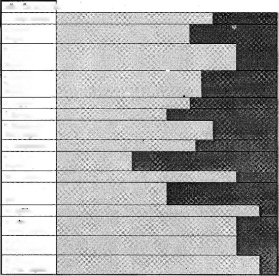

12. Eğitim
13. Birey ve Devlet İlişkisi
14. Kadın Erkek İlişkisi
KÜLTÜR BOYUTU
1. Dünya Görüşü
2. İnsanın Dogası
7. İlişkilerde Güc; Dengesi
8. Yarışkanlık
11. Materyalizm
15. Din ve Devlet İlişkisi
3. İnsanın Dogayla İlişkisi
4 nm
Toplumla
İlişkisi
5. Değişim
6. Zaman
9. İletişim Biçimi
10. Pratiklikt
Özgürlükçü Çağdaş Anlayış ve Geleneksel Otoriter Kültür Boyutlannın Kişinin Psikolojik Yaşamına Yansıması Geleneksel Otoriter Kültür'ün baskın olduğu
«B» Kişisi
| Özgürlükçü Çağdaş Anlayış;
"Bu tür çift paradigmalı yaşamın kendine özgü ilginç psikolojik bır iç dinamiği vardır. Örneğin, öğretmenler otoriter tavır ve davranış içinde özgürlükçü ınlayışın temelinde yatan eleştirel düşünmeyi
Öğrencilerine öğretmeye çalışırlar. Bu tür çift paradigmalı yaşamın ( 'umhuriyet'in kurucuları için de geçerli olduğunu söyleyenler vardır. Hu kişiler, «Özgürlükçü Çağdaş Anlayış»ı topluma mal etmeye çalışan kurucuların «otoriter» tavır ve davranış içinde öğretmek istedikleri temel felsefeye ters hareket ettiklerini ileri sürmektedirler.
"Çift paradigmalı insanımız aile içi iletişimlerinde, çocuk yetiştirirken, komşularıyla ilişkilerinde rahatlıkla geleneksel anlayış içinde davranırken, eğitim, askerlik, adalet gibi devlet aracılığıyla düzenlenmiş resmi ortamlarda yeni düzene uygun olarak davranmak istemektedir. Böylece, evinde kız çocuğunu erkek çocuktan daha değersiz gören baba, mahkemede kadın bir yargıcın verdiği hükmü kabul etmek zorunda kalabilmektedir.
"Kanunlar «Özgürlükçü Çağdaş Anlayış»ı yansıtacak biçimde yapılırken, insan ilişkileri geleneksel kültür anlayışıyla yürütülmektedir. Örneğin, üniversiteye nasıl doçent alınır konusunda yazılı yasa ve yönergeler çağdaş anlayışı yansıtır. Ne var ki, gerçekte başka bir paradigma iş görüyor olabilir.
"Bunun güzel bir örneğini şu gazete kupüründe görüyorsun" diyerek 27 Nisan 1992 günkü Hürriyet gazetesindeki Emin ÇÖLAŞAN'ın köşesinde «Bir Üniversite Komedisi» başlıklı yazıyı önüme koydu. Yazıda, Haluk Şentürk adında birinin gazete ilanında görmüş olduğu Marmara Üniversitesi Mühendislik Fakültesi, Çevre Mühendisliği Bölüm ü'ndeki yardımcı doçentlik kadrosuna başvurusu ve başvuruyu izleyen günlerdeki olaylar anlatılmaktaydı:
Haluk Şentük, 1974 yılında ITÜ inşaat Fakültesini bitirir.
Daha sonra çevre mühendisliği alanında master ve doktora yapar. Bu arada Amerika ve Almanya’da, bu alanda yapılan araştırmalarda görev alır. Sonra Avustralya’ya gider, orada üniversitede yardımcı doçent olarak ders verir... Ve geçtiğimiz aylarda Türkiye’ye döner.
Haluk Şentürk'ün başvurusundan sonra fakülte dekanı kendine sınav yer ve zamanını bildiren bir mektup gönderir. Sınav günü istenilen yere giden Şentürk'e sınavın ertelendiği söylenir. Dekan telaşlı görünmektedir ve bölüm başkanı dekanın yerine konuşmaktadır.
Üniversite komedisi artık başlamıştır! Şentürk sınav tarihinin kendine bildirilmesini beklerken, 30 Ekim 1991 günü Dekan imzasıyla gelen yazı aynen şöyledir:
"Fakültemiz Çevre Mühendisliği Bölümü’nde açık bulunan yardımcı doçent kadrosuna atanma isteğiniz, yapılan sınav sonucunda sınav jürisi tarafından yeterli görülmemiştir. Başvuru evraklarınız ve yayınlarınız ekte sunulmuştur. Bilgi ve gereğini rica ederim.”
Durum inanılır gibi değildir, çünkü Şentürk herhangi bir sınava alınmamıştır! Şentürk bu durumu Dekan Bey'e bir mektupla bildirir, ama cevap alamaz. Bu aradaduyar ki, ilan verilmeden başka biri buraya alınmıştır! İşin içinde bir dümen olduğu kesindir.
Haluk Şentürk Üniversite Rektörüne başvurur, yapılan işlemin açıklanmasını ister. Bir süre sonra Dekan üç satırlık bir mektup göndermiştir: «Yapılan işlemin 2547 sayılı yasanın 23. maddesine uygun olduğu anlaşılmıştır,» denilmektedir. Şentürk yeniden rektörlüğe yazar ve kendine sınav verilmeden verilmiş gibi gösterildiği ve müracaat etmemiş başka birinin başvurusuz kadroya alındığı izleniminde olduğunu ve bu nedenle mahkemeye başvuracağını söyler. Yine cevap gelmez. Haluk Şentürk İstanbul Birinci idare Mahkemesi'nde dava açar ve üniversite işleminin iptalini ister. Bu arada rektörlük idaresi hakaret suçundan Haluk Şentürk aleyhine savcılığa suç duyurusunda bulunur.
Gazete kupürünü okuduktan sonra Yakup Bey'le göz göze geldik. Yakup Bey, "Söyle bakalım, okuduğun bu olayda yer alan insanlardan hangisi enayi?" diye sordu. Ne cevap vereceğimi bilemiyordum. "Bilmiyorum, ama bence üniversite haksızlık yapmış" dedim.
Yakup Bey, "Ben kiminhaklı ya da haksız olduğunu sormadım. Gerçi o da sorulabilir; ne var ki, olayda işleyen iki paradigmaya işaret etmek istiyorum. Gazeteye ilan vererek boş kadroyu duyurmak yasa gereği; bu aşamada «Özgürlükçü Çağdaş Anlayış» paradigması hakim. İşe «tanıdık» birini almak ise «Geleneksel Otoriter Kültür»ün bir gereği. «Özgürlükçü Çağdaş Anlayış» paradigması açısından Bölüm Başkanı, Dekan ve Rektör'ün davranışı yanlıştır. Bu tür davranışa Aziz Nesin büyük bir olasalıkla «enayice bir davranış» diyecekti. Öte yandan «Geleneksel Otoriter Kültür» paradigmasında Haluk Şentürk'ün davranışı «enayice bir davranış» olacaktır. Mahalle bakkalı Şentürk'e, «Abi, bana niye sormadın. Sana tanıdık bulurduk. Tanıdığı olmayan kişiyi gazete ilanıyla paldur küldür işealırlar mı?" der ve içinden, «Bu adam ne biçim okumuş; en basit durumu bile kavrayacak zekası yok» diye düşünebilir.
"Gördüğünüz gibi iki farklı görüş ve iki farklı değerlendirme ile karşı karşıyayız. «Geleneksel Otoriter Kültür» bireye ancak ilişkileri içinde değer vermekte (4. boyut), saygın görmekte (7. boyut), durumu dolaylı olarak anlatmakta (9. boyut) ve resmi makamı her tür soruşturmanın üstünde tutmaktadır (13. boyut). Mahalle bakkalı bu paradigmayı, uzun yıllar yurt dışında görev yapmış Haluk Şentürk'ten daha iyi bilir. Ama, mahalle bakkalı Amerika'ya ya da Avustralya'ya gitse ve o ülkelerde «Geleneksel Otoriter Kültür» paradigması içinde hareket etse davranışları oldukça «tuhaf» karşılanır.
Bu görüş açısı bana çok ilginç gelmişti. Ben yurt dışında bulunmadığım için Yakup Bey'in söylediklerini olduğu gibi kabul ediyordum. Ama içim rahat olsun diye Yakup Bey'e aklımdan geçen soruyu sordum ve aramızda aşağıdaki konuşma geçti:
Timur: "«Özgürlükçü Çağdaş Anlayışın» hakim olduğu bir toplumda, örneğin bir Avrupa ülkesinde ya da Amerika Birleşik Devletleri'nde kişiler tanıdıklarına öncelik vermezler mi?"
Yakup Bey: "Avrupa ülkelerinde uzun sürebulunmadım;bu nedenle onlarla ilgili bir gözlemde bulunamam. Ne var ki, ABD'de görevli olarak yıllarca çalıştım. Bu gözlemlere dayanarak şu genellemeyi rahatlıkla yapabilirim: Normal koşullar altında genellikle kişinin yeteneği, becerisi ve deneyimi, onun işe alınmasında, ne kadar tanıdık olduğundan daha önemli ve etkilidir."
Timur: ’ 'Bunun dışına çıkan, tanıdığını işealmayakalkan olmuyor mu?"
Yakup Bey: "Oluyor. Ama bunların sayısı çok az. Ayrıca, tanıdığı yeteneksiz birini, deneyimli ve yetenekli birine tercih ederek işe alan biri önemli bir suç işlemiş olarak görülüyor ve şu veya bu biçimde bir yasal işleme maruz kalıyor."
Timur: "Ne var ki, yine de oluyor. Yani bizim toplumda tümden kayırmayla işe alınmadığı gibi, ABD'de tümden yeteneğine bakılarak işe alınmıyor."
Ya kup Bey: "Evet, bu gözleme katılırım. Peki, bu gözlemin sonunda, bu iki toplum arasında, bu yönden bir fark yoktur sonucuna mı ulaşmamız gerekiyor?"
Bu anda zayıfbir noktayı savunduğumu bile bile sırfkarşı çıkayım diye Yakup Bey'e "Evet!" dedim.
Yakup Bey: Bir süre sustu. Yüzüme baktı. Sanki oyunumu keşfetmiş gibi gülümsedi ve konuştu. "Sizin bu tutumunuz Amerika'da çalışan bir Türk arkadaşımın tutumunu hatırlatıyor. Geçenlerde kendisiyle konuşurken üniversiteye doçent alma konusundaki gazete haberini gösterdim ve geleneksel kültür ile çağdaş anlayışa rasındaki farklılığa ilişkin yorumumu getirdim. Benim yorumumla hemfikir olmadığını belirtti ve şu gözlemde bulundu:
"«Şimdi çalıştığım yerde sürekli ikamet ve çalışma için gerekli kartı alabilmem için benim yeteneklerimin ABD'de kolaylıkla bulunmadığını, bu nedenle çalıştığım şirketin başka bir Amerikalıyı işe alma şansının olmadığını, beni almak zorunda olduklarını Amerikan hükümetine kanıtlamaları gerekiyor. Bunu kanıtlayabilmeleri için yapılan iş aynen beni tarif eden (neredeyse bir ismim hariç) bir ilan hazırlayıp gazetelere vermek oluyor. Başvuranları elemek için ben patronumla oturup bahaneler buluyoruz. Bu hemen hemen herkesin bildiği danışıklı bir dövüş olarak devam edegelmekte. Yoksa Amerika'da 'Geleneksel Otoriter Kültür'ün dairesine mi girdi?» "Gördüğün gibi bu arkadaşın düşünüşü de seninkinebenziyor. Yani söylemek istediği şu: Türkiye ve Amerika arasında bu yönden fark yok: Biz yapıyorsak, onlar da yapıyor.
"Ben ise bu arkadaşımın durumunu farklı görüyorum. Her şeyden önce Amerika'daki şimdiki işine ilk alınırken yetenekleri ve becerisi önemli rol oynamıştır. Geçen zaman içinde şirkettekiler onu tanımışlar ve bir ilişkiler örgütü gelişmiştir. Şirket onun yetenekli olduğunu biliyor; bu nedenle ilişkilerini sürdürmek istiyor ve kanun daha başka olanaklar tanımadığı için bu oyunu oynuyorlar. Önce bunu saptamak istiyorum. Yani kişi işe ilk alınırken o işe başvuran diğerleriyle kıyasıya bir yarışma içindedir.
İkinci saptamakistediğim nokta da, ABD'deyetenekleri vebecerileri ikinci plana alarak ilişkilerinden dolayı işe almanın çok az sayıda olması, bu ülkenin aynı bize benzediğini göstermez. Eğer böyle düşünürsek, hiç bir ülke ya da ulus arasında fark göremeyiz. İngiltere'de okuma yazına bilmeyenlerin oranı yüzde 8, Kenya'da yüzde 68 ise, bu mantığa göre, iki ülke arasında bu yönden fark yok demektir; çünkü hem Ingiltere'de hem de Kenya'da okuma yazma bilmeyen kişi var demektir.
"Bu mantığı rahatlıkla savunacak bir durumda iseniz, söyleyeceklerinizi merakla bekliyorum."
Timur: Gülümseyerek "İnat olsun diye konuşmuştum. Esasında söylediklerinizi anlıyorum ve yorumunuza katılıyorum” dedim.
Yakup Bey de gülümsedi. Yenilenen ıhlamurlarımızdan içerken bu yeni bakış açısının daha önce konuştuğumuz trafik afeti, sigara afeti, diş bakımı konularıyla ilişkisini düşünüyordum. «Geleneksel Otoriter Kültür» kalıplayıcı aile ortamına temel mi oluşturuyordu? «Özgürlükçü Çağdaş Anlayış» geliştiren aile ortamına daha mı uygundu? Bu konuda karar vermek güçtü. Yakup Bey'e kafamdan geçenleri söyledim.
Timur: "Yakup Bey sizce «Geleneksel Otoriter Kültür» ile kalıplayıcı yetişme ortamı arasında bir ilişki var mı?” diye sordum.
Yakup Bey: ' '«Geleneksel OtoriterKültür»üntemel felsefesi, paradigması ile «kalıplanmış» insanın temel tutumu, paradigması arasında büyükbenzerlikvardır. Yalnız şunu unutma. Türkiye'de «Özgürlükçü Çağdaş Anlayış»ı temsil ettiğini iddia eden birçok doktor, profesör gibi meslekleri olan okumuş kişi, aslında «Geleneksel Otoriter Kültür»ün temel felsefesi, paradigması ile «kalıplanmış» insan yaşamlarını sürdürmektedirler. Sigara içmeye devam eden bir doktorun bu davranışının altında onun «kafasının kalıplanmışlığı» yatar. «Özgürlükçü Çağdaş Anlayış»ın hakiki felsefesini, ruhunu yaşayan bir insanın «kalıplanmış» bir insan olarak kalması olanaksızdır.
«Geleneksel Otoriter Kültür» ile kalıplayıcı yetişme ortamı arasında bir ilişki var mı?' sorunuza 'Kesinlikle evet' diyeceğim. İlerideki buluşmalarımızda bu soruya ilişkin tartışmalara yine dönebiliriz. Onun için temel paradigmaların benzerliğinin ötesinde «Geleneksel Otoriter Kültür» ile kalıplayıcı yetişme ortamı arasındaki ilişkiden şimdi söz etmeyeceğim.
Yargılama, Yargılama, Yine Yargılama
Yakup Bey, "Bu iki paradigmayı iyice anlamadan Türk insanının düşünüş, duyuş ve davranışını açıklamak zorlaşır. Bu nedenle Türk psikoloğu, Türk insanının davranışı incelerken her iki paradigmayı da gözönüne almak zorundadır" diye konuşmasını sürdürdü:
"Timur Bey, bu iki paradigmayı, bu iki dünya görüşünü çoğu kez duygusal olarak algılarız ve nötı; bir anlayıştan uzaklaşırız. Bazı yazarlar «Geleneksel Otoriter Kültür» paradigmasından kaynaklanan duygu, düşünüş ve davranışları olumsuz karşılarlar. Bu tür davranışların bugünün Türk toplumunda yer almamasını isterler. Ne var ki, diğerleri «Özgürlükçü Çağdaş Anlayış»ın getirdiği ya da getirebileceği her tür değişikliğin karşısında yer alırlar. Doğal olarak her yazar ve düşünür değişik konularda ve değişik derecelerde görüşlerini bildirdiğinden benim şurada şimdi yaptığım türden bir genelleme gerçeğe pek uymaz. Ama bakın size bazı örnekler vereyim" diyerek daha başka bazı gazete kupürleri çıkardı.
İlk kupür 12 Temmuz 1992 tarihli NOKTA dergisinde Reha Muhtar adlı yazarın köşesinde yer alan bir yazıydı. Yazının başlığı «TÜRKLER»in üstünde bıyıklarını buran, birkaç gün traş olmamış, büyük burunlu bir erkek çizimi yer alıyordu.
TÜRKLER
Gazeteleri açın bakın... Her sayfada, siyasi haberler, siyasi yorumlar... Tüm bu siyasi haberler ve yorumlar hep ne için yazılıyor? . . Daha güzel ve daha mutlu bir Türkiye için...
İyi güzel de, mutlu ve çağdaş yaşamanın yolu siyasetten geçmiyor ki. ..
Siyaset onların içinde zincirin sadece tek bir halkası... Çağdaş _yaşamın o kadar değişik unsuru var ki. ..
Gelin önce PIAR araştırma şirketinin bu ülkede yaşayan insanlarla ilgili yaptığı kamuoyu araştırmasının sonuçlarına bakalım...
Türkiye’de yaşayan insanların tam tamına yüzde 54’ü, yani yarısından da fazlası haftada bir kez bile yıkanmamakta ...
Haftada bir kez bile çamaşır değiştirmeyenlerin oranı ise yüzde 72.
Her iki kişiden biri haftada iki kez yıkanıyor... Bunların da yarısı kazandan veya kovadan su dökünerek...
Yüzde 85'imiz evde bir hayvan beslenmesine kesinkes karşı...
Ve yüzde 78'imiz yaşamında hiç spor yapmamış ...
Yakup Bey, "Görüyorsunuz yazar kendi toplumuna dönük eleştiri yapmış. Eleştirisinde kullandığı ölçütler çağdaş uygarlığı benimsemiş toplumlarda kullanılan ölçütler. Bu ölçütleri kullanmanın doğalolduğuna o kadar inanmışız ki, bu ölçütlerin belirli bir kültürün, dünya anlayışının, paradigmanın ürünü olduğunu çoğu kez unuturuz."
Burada Yakup Bey'in sözünü kestim ve "Ama Yakup Bey, haftada bir kez bile yıkanmayan adam pis değil midir?" diye sordum.
Yakup Bey, "Ben askere gittiğimde ilk eğitim devresinde 6 hafta yıkanmamıştım. Babama durumu anlattığımda kendinin seferberlikte 6 ay hiç yıkanamadığını belirtti. Durum ve koşullara göreyıkanma sıklığı değişiyor.
"Burada söylemek istediğim, üzerinde durmak istediğim insanların öz değerleriyle, karakter yapılarıyla, koşullar içinde oluşan davranışlarının ayırt edilmesidir. Eğer Reha Muhtar, «Türkiye'de yaşayan insanların tam tamına yüzde 54'ü, yani yansından da fazlası haftada bir kez bile yıkanmamakta...» gözlemini yaptıktan sonra, «Bu durum Türklerin pis insanlar olduklarını gösteriyor» sonucuna varsa idi, hata ederdi. Aynı biçimde Aziz Nesin'in Türklerin tavırlarına bakarak, Türkler «enayi» sonucuna varması yanlış olur. Bilgisayar alanından örnek verecek olursak, bu, bilgisayarın tel ve transitörlerden oluşan donanımı ile değişik işler görmek üzere bilgisayara yüklenen programlan, yazılımı karıştırmaya benzer."
Yakup Bey'den bilgisayarla ilgili örneği biraz daha açmasını istedim. Bilgisayarla ilgili örnekle konuyu daha açık seçik anlayabileceğim umudundaydım. Yakup Bey isteğimi memnuniyetle kabul etti.
"Biliyorsunuz Apple şirketi birbirinden farklı bilgisayarlar yapmakta. Bu bilgisayarlar iç işlem bellek kapisetesi, işlem hızı, veri ve programları depolama kapasitesi yönünden birbirinden farklıdırlar. Ne var ki, belirli bir dizi içinde aynı iç işlem bellek kapasitesi, işlem hızı, veri ve programları depolama kapasitesine sahip bilgisayarlar aynı isimle piyasaya sürülmektedir ve bunlar birbirine denktir.
"Bilgisayarlarda kullanılabilecek değişik türden programlar geliştirilmiştir. Bazı programlar, inşaat mühendisleri için oluşturulmuştur ve bina, yol ya da köprü yapımında kullanılan hesapların çözümünde uygulanır. Bazı programlar, mimarlar için yazılmıştır ve mimarın projeyi çiziminde ve görüntülemesinde uygulanır. Yazarlar ve sekreterlerin işlerini kolaylaştırmak amacıyla yazılmış programlar vardır. Muhasebeciler için, kimyagerler için, kısacası aklına gelebilecek her türlü meslek için programlar yazılmıştır ve aynı bilgisayar bütün bu değişik programları kullanabilir.
"İşte ben diyorum ki, insanoğlu ister Afrika'da, ister Amerika'da, ister Rusya ya da Türkiye'de doğmuş olsun aynı bilgisayar olarak doğmaktadır. Ne var ki, insan-bilgisayarına her ülkede doğumdan itibaren farklı kültür-programları yüklenmektedir. Bu ülkelerdeki insanların davranışları arasındaki farklar, o insanların doğumdan itibaren öğrendikleri paradigmadan kaynaklanmaktadır.
"Konuyu bu şekilde ortaya koyunca, insanın kendine değil, onun davranışını yöneten paradigmaya yönelmemiz, eğer bir suçlama yapılacaksa, o paradigmaya dönük suçlama yapmamız gerekir.
"Fakat bazı yazarlarımız maalesef, sanki Türkler düşük kalitede bilgisayarlarmış gibi, insanımızın zeka ya da öz yeteneklerini hedef almaktalar. Bu tutumun olumlu yanını göremiyorum."
Paradigma kavramının önemini şimdi daha iyi görebiliyordum. İnsanın kendini yargılama ile, o insanın kullanmakta olduğu paradigmayı yargılamak arasında ne kadar büyük fark olduğunu da görmeye başlamıştım.
Yakup Bey, önüme bir başka gazete kupürü koydu. ELELE dergisinin Ağustos 1992 tarihli sayısında «TSE DAMGALI DAVRANIŞLARIMIZ» başlıklı Hülya Vatansever'in bir yazısı vardı.
TSE DAMGALI DAVRANIŞLARIMIZ
Sadece mallarımız değil, davranışlarımız da TSE damgalıdır. Çünkü başka hiçbir ulusta olmayan davranışlara sahibiz. 41 kere maşallah! Havasından mıdır, süyundan mı, huyumuz-suyumuz bir başkadır. Bu konuda birkaç kitap yazılabilir. Ama biz yerimiz elverdiğince belli başlı örneklerimize bir göz atalım.
Yazının geri kalan kısmında değişik gözlemler belirtiliyordu. Yakup Bey'in işaretlemiş olduklarını okudum:
• "Temizlik imandan gelir" desek de bu lafta kalır. Bir hafta aynı iç çamaşırlarıyla gezer, parfüm kullanmayız, dişlerimizi fırçalamayız. Ama aslan gibi güçlü Türklerin sağlığını, pislik m islik bozamaz.
• ısrarcıyız. Her konuda ısrar etmeye bayılır ve hatta ısrarlarımızla karşımızdakileri bayıltırız. "Ay n'olur bir tabak daha ye.
Valla yemezsen darılırım.". .
• Erkek erkeğe ve kadın kadına toplantılara bayılırız. Ne de olsa kökenimizde haremlik ve selamlık var. Erkeklerimiz kahve veya meyhanede, erkek erkeğe pişpirik oynayarak ya da kafaları çekerek geyik muhabbeti yaparlar. Kadınlar da evlerde toplanıp, pasta ve keklerle, dedikodu yapıp şişmanlarlar.
• Biz hep haklıyızdır ama herkes bizim hakkımızı yer. Çocukken küçük kardeşimiz elmamızı yer. Okulda öğretmenimiz hakkımızı yer, bizi sınıfta bırakır. İş yerinde patronumuz mutlaka hakkımızı yer. Uluslararası maçlarda, yarışmalarda, siyaset arenalarında, malumunuz, hakkımız devamlı yenir. Yeter artık hakkımızı yemeyin!..
• Kitap, gazete ve dergi okumayı sevmeyiz. Hatta okumaktan nefret ederiz. Bir okuyan gördük mü asla dayanamaz, "Sen de okuya okuya hafız olacaksın be kardeşim" diye söylenmeye başlarız.
• Renklerden korkarız. Siyah, gri ve kahverengi en sevdiğimiz renklerdir. Hepimiz bu renklerde giysilerle ortalarda dolaşırız. Kırmızılar, yeşiller ve sarılar bizim gibi ciddi insanlara göre değildir. Onları, hafif kişiler giyer.
• Başkalarının sözlerine önem veririz. Başkalarının düşüncesi her zaman kendimizinkinden önemlidir. Hep onların istediği gibi davranırız. "Ama olur mu hiç, evebusaatte gelirsen komşular ne der?"
• Üniformadan, polis görünüşlü sivillerden ödümüz kopar.
Yolda giderken yere yatın deseler yatarız, sıraya girin deseler gireriz. Kimliklerimizi hemen çıkarır gösteririz. Bunların nedenini sormayız. Hem biz kimiz ki?
• Birey olarak son derece korkak, kalabalıkken son derece cesuruz. "Vatan, millet, Sakarya" diye hiç düşünmeden savaş çığlıkları atarız. Onun için bizde bireysel protesto asla görülmez.
• Caniliği marifet belleriz. Kızdığımızı hemen sallandırırız. "Sallandıracaksın üç beş kişiyi Taksim Meydanı'nda bak birdaha bunlar olur mu?“...
• "Nikâhta keramet vardır"bu nedenle evlenen çiftler hemen birbirlerinin gözünü oymaya, birbirlerinin hayatını kısıtlamak için ellerinden geleni yapmaya başlarlar.
• Torpil bulmadan hiçbir işimizi halletmeyiz. Okula kayıt olurken, işe girerken, askere giderken, bir evrak imzalatırken, mutlaka bir torpilimiz olmalıdır. "Arkan varsa sırtın yere gelm ez.
• Biz öyle kural kaide bilmeyiz. Hatta biz kurallara değil, kurallar bize uyar. Trafik ışıklarının yüzüne bakan olmaz. Üst ve alt geçitler asla kullanılmaz. Şehri kır zannederiz.
• Türkçemiz lastik gibidir. Normal bir konuşmayla kelimeleri lastik gibi çeker, başka şeyler ima eder veya anlarız.
• En korktuğumuz şey birey olmak ve böylece yalnız kalmaktır. Bu yüzden hemen bir gruba dahil olur, onlar gibi giyinir, onlar gibi düşünürüz. Bizim kendi düşüncemiz yoktur. Grup ne derse o olur.
• Allah için kadınlarımız çok temiz ve titizdir. Evlerin içinde bir kıl çöp bulunmaz. Çünkü bütün çöpleri halıları balkondan silkerken komşuların balkonuna atarlar.
• Bizim, ama hepimizin cereyan fobisi vardır. Cereyanda kalmaktan, üşütüp hastalanmaktan ödümüz patlar. Sıcak yaz günleri bile otobüslerin, arabaların, camları kolay kolay açılmaz, açılsa da hemen kapatılır. Aman, cereyanda kalıp hasta mı olalım?
Yakup Bey, "Hülya Vatansever keskin bir gözlemci. Okuduğun ifadelerden de anlayabileceğin gibi Hülya Hanım «Özgürlükçü Çağdaş Anlayış» paradigmasının gözlüğünü takarak, öbür paradigmanın ürettiği davranışları değerlendirmiş bulunuyor. Bu demek değildir ki, Cumhuriyet hükümetlerinin Türkiye'de gerçekleştirmek istediği paradigma değişimini bütün eğitilmiş Türkler aynı biçimde değerlendiriyor. Daha önce söylediğim gibi biz Türkler çifte paradigmalı olduk. Bazılarımızda eski paradigma, bazılarımızda da yeni paradigma baskın olabilmektedir. Örneğin, şu haberde yeni paradigmanın öyle pek beğenilecek yanı olmadığını söyleyen bir doçentten söz edilmektedir."
Yakup Bey 15 Şubat 1993 günkü Hürriyet gazetesinden bir haberi önüme koydu. Haberinbaşlığıveiçeriğininbazı kısımları işaretlenmişti. Altı çizilerek işaretlenen kısımlar şuydu:
Nurcu Doçent: Cumhuriyet zındık düzeni
Konya Selçuk Üniversitesi Öğretim Üyesi Doçent Dr. Ahmet Akgündüz, Said-i Nursi ile ilgili konferansta, Cumhuriyet rejimi için, 'zındık düzeni' deyimini kullandı.
Said-i Nursi'nin Kuvay-i Milliye Hareketi'ne de katıldığını belirten Akgündüz, "Ancak Bediüzzaman bir zındık düzeni kurulduğunu görünce Ankara'daki yönetici kadroları ile ilişkisini kesmiştir" dedi. Cumhuriyeti 'istibdat Düzeni' olarak tanımlayan Akgündüz
Yakup Bey, "Doçent Dr. Ahmet Akgündüz bu düşüncesinde gayet tabii yalnız değildir. «Geleneksel Otoriter Kültür» gözlüğüyle Cumhuriyet hükümetlerinin getirmeye çalıştıkları «Özgürlükçü Çağdaş Anlayış»a bakarak tedirginlik duyan, yeni paradigmanın bizim özümüze ters düştüğünü düşünen birçok kimse vardır."
Takke davası
MAİATYA, (hho)
■ ŞİKAYET di i için gitiğ tüm ikazlarar an baştandaki takkeyi için tıal<kVmda davaa çtlan Auliah Bulurun (solda) dur ası sırasında bir grup, t1ekblr getirdi.
■ Geçen kaı kaçırılanwı için
51 y | ı
Ahmet*takkeyi çAarması için İsrafından
Öcaz eeökft. bu tekkeyi Adattın huzurunda çukarmıyoT aldot . T em,ç erefim "" bar şayintdir* dtyen ulutiah Bulut cı y asalara tm iKi ay hapis İstemiyle dava açb.
■ Malatya Sulh Ceza Mahke rnesi'nde tutuksuz yargılanan Abdullah Bulutun duruşması sırasında. yaklaşık 100 kişilik bir grup Adlrye'de toplandı Bir süre koridorlarda ve bahcede kalan grup, daha sonra tekbir getirmeye başladı. Adliye'de dş.arı çıkmak isteıken bazı camlan kıran grup daha sonra dağıldı. Duruşma ileri bir tarihe bırakıldı.
(Hürriyet, 3 Temmuz 1992)
Yakup Bey «Takke davası» başlıklı bir gazete kupürü gösterdi. Hürriyet gazetesinin 3 Temmuz 1992 günkü sayısında_yer alan haberde şunlar yazılıydı:
Geçen nisan ayında kızı kaçırılan ve şikayet için Cumhuriyet Savcılığı'na giden 51 yaşındaki bakkal Abdullah Bulut, başındaki takkeyi çıkarması için Savcı Ahmet Hastürk tarafından ikaz edildi.
"Ben bu takkeyi Allah’ın huzurunda çıkarmıyorum. Takke takmaktan gurur duyuyorum. Takkem; namusum, şerefim ve her şeyimdir" diyen Abdullah Bulut hakkında savcı yasalara muhalefetten iki ay hapis istemiyle dava açtı.
"Aziz Nesin, Doçent Akgündüz ve Abdullah Bulut için «enayi» ya da «aptal» kavramını uygun görebilir. Buna karşılık Doç. Dr. Ahmel Akgündüz ve bakkal Abdullah Bulut, «hakikatleri» göremediği için, Aziz Nesin'in kendisinin zihinsel yeteneklerini yetersiz bulabilirler."
"Ben bu insanların zeki ve yetenekli olduklarını kabul ediyor, sadece kullanmış oldukları paradigmaların, dünyaya ve kendilerine bakarken kullandıkları gözlüklerin farklı olduklarını söylüyorum."
Abdullah Bulut'un takkesini çıkarmaması ile ilgili haber beni düşündürmeye devam ediyordu. Ne düşündüğümü kendim de bilmiyordum, ne var ki Yakup Bey'le bu konuda konuşmak istiyordum. Aramızda aşağıdaki konuşma geçti:
Timur: "YakupBey, Abdullah Bulut kızı kaçırıldığı için Cumhuriyet Savcılığı'na gidiyor. Kanunu kendi eline alıp kızını kaçıranın peş ine düşeceği yere, ya da mafya babalarına gidip onlardan adalet arayacağı yerde, iyi bir vatandaş olarak Cumhuriyet Savcılığı'na gidip adaleti devlet aracılığıyla arıyor. Savcı bu vatandaşa yardım elini uzatacağı yerde neden onun takkesiyle uğraşmaya başlıyor?" Yakup Bey: "Bana öyle geliyorki, savcı devletin vatandaşlara hizmet etmek için var olduğunu düşünmüyor. «Geleneksel Otoriter Kültür» ile «Özgürlükçü Çağdaş Anlayış»ı karşılaştıran tablodaki 13. boyutu hatırlıyor musun? Çağdaş anlayışı temsil etmesi gereken savcı bu tutumuyla aslında otoriter tutumu temsil ediyor. Savcının davranışı «kalıplanmış» bir davranış."
Timur: "İkinci sormakistediğim deAbdullah Bulut'uncesurca karşı koyuşu ile ilgili. Bu davranışı ile Abdullah Bulut bireysel bir davranış göstermiyor mu?"
Yakup Bey: "Herhalde bu sorunuzun altında şöyle bir soru daha var: Dindar biri olarak Abdullah Bulut'un «kalıplanmış» biri olmasını bekleriz. Ne var ki, savcıya karşı bireysel cesur bir davranışıta bulunuyor. Burada bir çelişki yok mu?"
Timur: "Evet, aslında sormak istediğimi siz daha iyi ifade ettiniz." Yakup Bey: "Abdullah Bulut'un davranışı cesur bir davranış; inancının kuvvetinden kaynaklanan cesur bir davranış. Abdullah Bulut'un «kalıplanmış» biri olduğunu onu tanımadan söyleyemeyiz. Bir kişinin dindar olması onun ille de «kalıplanmış» olduğu anlamına gelmez. Eğer Abdullan Bulut dinin temelindeki ilkeler çerçevesinde kendi anlayışını geliştirmiş ise, bence ona «kalıplanmış» insan diyemeyiz. Eğer dini bir dizi kurallar ve ritüeller olarak görüyorsa ve kendi içine sindirmeden bu kalıplara körü körüneu yuyorsa o zaman «kalıplanmış» birinsan olur. İster «kalıplanmış» ister «gelişmiş» olsun her insan cesurca davranışta bulunabilir. Söz konusu olan şeyin kişinin iç dünyasında ne gibi bir manidarlık ifade ettiğine, kendi özüne ne kadar yakın hissettiğine göre tepkisinin şiddeti değişir."
Timur: "Ben Abdullah Bulut'a yakınlık hissettim. İnsan kendi ülkesinde kendi inançlarıyla ahenk içinde yaşayamaz mı? Hem devlet olarak bu vatandaştan vergi alacaksın, hem de inandığı gibi giyinmesini yasaklayacaksın. Bu bana ters geliyor!"
Yakup Bey: "Bu konu sadece ucu görünen büyük bir buzdağına benziyor. Konunun ayrıntılarına girecek olursak çok karmaşık bir tablo ile karşılaşırız. Belkibu konuyu başka bir dizi buluşmamızda ele alırız. Ama benim açımlamaya devam etmek istediğim paradigma konusunun senin kişisel yaşamınla ilişkisi. Onun için bu büyük buzdağını şimdilik olduğu yerde bırakalım. Şunu söylemekle yetineyim: Abdullah Bulut olayı ile senin ifade ettiğin duygular bende de var."
Bir süre sustuktan sonra Yakup Bey önüme otuzdan fazla gazete kupürü koydu. "Bu haber ve yorumların hepsi «paradigmaların kavgası» diyebileceğim yukarıdaki türden ifadeleri, algı ve yorumları içermektedir. Hemen hergün her gazete ve dergide bu tür yorum ve haberlere rastlarsın. Burada tekrar tekrar aynı şeyden söz etmek bize bir yarar getirmeyeceğinden, daha fazla örnek vermek istemiyorum" dedi ve gazete kupürlerini alarak yeniden zarfa koydu.Ben yorulmuştum. Tartıştığımız konular heyecanlanmama sebep oluyordu. Ne var ki, Yakup Bey'in yargılamayan, anlamaya yönelik tutumu beni etkilemişti. Kendisine duyduğum hayranlık biraz daha artmıştı.
Bardağında kalan ıhlamuru bir yudumda bitirdikten sonra bana, "Timur Bey, şimdi söyleyin bakalım, Türk halkı aptal mı?" dedi.
Çok ciddi bir tavır takınarak, "Yakup Bey, hangi davranışa, kimin gözlüğüyle baktığınızı söyleyin, ben de ona göre o kişinin aptal ya da akıllı olduğunu size söyleyeyim" dedim. İkimiz de güldük.
Vakit geç olmuştu. Biraz havadan sudan konuştuktan sonra iki gün sonra buluşmak üzere oradan ayrıldım.i nsanların büyük çoğunluğu tüm mutluluklarını bir başka insanın eline bilerek koymayaç alışır.
Bu tür mutluluk arayışı insanın olgun olmadığını gösterir.
Olgun insan mutluluğunun temelinin kendi içinde olduğunu bilir.
QUENTIN CRISP
İÇ VE DIŞ BAŞARI
Yakup Bey'le tekrar buluştuğumuzda, kendimi paradigma kavramını ayrıntılarıyla anlamış bir insan olarak görüyordum. Böylesine önemli bir kavramı şimdiye kadar ne lisede ne de üniversitede hiçbir derste öğrenmemiş olmamı hayretle karşılıyordum. Birçok konudaki zihin bulanıklığım bu kavram sayesinde açıklığakavuşmayabaşlamıştı.
Yakup Bey'le Beyazıt Camii'nin çayevinde buluşup her zaman oturduğumuz masaya yöneldiğimizde orada başkalarının oturduğunu gördük. Yakup Bey hiç umursamadan köşede başka bir masaya oturdu. Bana baktı ve "Her zamanki masamıza oturamadığımız için canınız sıkıldı mı?" diye sordu. Duygumu saklamadım, "Evet,biraz" diye cevap verdim.
"insan ne kadar çabuk tutkunluklar geliştiriyor, değil mi?" diye güldü.
Bu gözleminin altında bana söylemek istediği önemli bir mesaj varmış gibi geldi ama, o bana fırsat vermeden hemen konuya girdi.
"Hatırlarsan,önce «kalıplanmış» ve «gelişmiş» insanparadigmaları üzerine konuştuk. Daha sonra paradigma kavramının ne kadar kapsamlı olduğunu göstermek için kültür ve toplum olaylarından örnekler aldık. «Türk halkı aptal mı?» diye sorarak «Geleneksel Otoriter Kültür»v e «Çağdaş Özgürlükçü Anlayış» adını verebileceğimiz iki tür paradigmanın toplumumuzda, hatta birey olarak içimizde yan yana yaşadığını, çoğu kez de birbirleriyle çatışma içinde bulunduğunu gözlemledik."
Bir süre sustu. Galiba bugünkü inceleme konusunu düşünüyordu. Çaycı ıhlamurları getirmişti. Gelen ıhlamurdan bir yudum aldı ve konuşmaya başladı:
"«Kalıplanmış» ve «gelişmiş» insanların kendilerine özgü paradigmaları olduğunu artık biliyorsun. «Kalıplanmış» insanın duygu, düşünüş ve davranışları, onun kendi paradigma düzeninin ürünü olduğu gibi, «gelişmiş» insanın duygu, düşünüş ve davranışları da onun kendi paradigmasının ürünüdür. «Kalıplanmış» ve «gelişmiş» insanların olaylar karşısındaki duygu, düşünüş ve davranışları, olaylarıdeğerlendirişleri, kullandıkları paradigmaları nedeniyle farklıdır. Bu farklılığı en iyi «başarı» anlayışında görürüz."
Ihlamurundan biryudum daha aldıktan sonra konuşmasına devam etti. Defterimi çıkarmış konuşmanın ana hatlarını yazmaya başlamıştım.
İç ve Dış Başarı
"Başarıyı iç ve dış başarı olmak üzere iki temel kategoride düşünübiliriz. Kişinin sağlıklı duygu, düşünüş ve davranışlarortaya koymasını, iletmesini ve paylaşmasını kolaylaştıran psikolojik gelişmeler iç başarıya örnektir. Birdenbire hiddetlenme huyu nedeniyle çoğu kere istemeden çocuklarının ve eşinin gönlünü kıran birinin, daha sakin ve sevecen olma yolunda gösterdiği psikolojik gelişme iç başarıya örnektir.
"Başka bir örneği sigara tiryakisi anne ya da babadan verebiliriz. Sigara içmenin yüzde 86'nın üstünde akciğer kanserine yol açtığını bilen ana ya da baba iki aşamada iç başarı gösterebilirler: 1) Çocukların bulunduğu ortamda sigara içmeyerek; 2) tümüyle sigara içmeyi bırakarak.
"Çocuklarının yanında sigara içen, onların sigara dumanı içinde uyumalarına yol açan ana-babalar, çocukların körpe ciğerlerini kanser olma yönünde etkiledikleri gibi, erken yaşta onları sigara tiryakisi olmaya da itmektedirler. Bunu bilen ana-baba, çocuklarını daha sağlıklı bir ortamda yetiştirmek için kendi tiryakiliklerini önleyebilecek psikoJojik bir gelişme gösterebilirse, önemli bir iç başarı elde ederler. Daha da önemli bir iç başarıyı, sigarayı tümüyle bıraktıkları zaman göstermiş olurlar.
"Kişi kendi yaşamına değer vermese bile, çocuklarının analı-babalı büyümesine önem verebilmelidir. Çocukların sağlıklı ve mutlu bir yaşam içinde gelişmeleri ana-babanın sorumluluğudur. Sağlıklı ve mutlu olan ana-babanın, büyük olasılıkla çocukları da sağlıklı ve mutlu olur. Sağlıklı ve iyi ana-baba olma isteği sayesinde sigara tutkunluğundan vazgeçebilen insan önemli bir iç başarı kazanmış olur.
"İç başarıya ulaşmış başka bir insan örneği olarak, kişisel bütünlüğünü geliştirerek yalan söyleme alışkanlığını bırakabilen ve en zor durumlarda dahi doğruyu söyleyebilen insanı verebiliriz."
Yakup Bey'in söylediklerinden kişinin her durumda, neticesi ne olursa olsun, mutlaka doğruyu söylemesi gerektiği sonucunu çıkardım. Fakat bazı durumlarda yalan söylemek, yani gerçeği olduğundan farklı göstermek ya da olduğu gibi göstermemek, çıkarlarımız yüzünden değil de, bir başkasını üzmemek ya ,da korumak için yapılıyorsa bunu farklı bir durum yarattığını düşündüm. Bu düşüncenin etkisi altında sorumu yönelttim:
"Yakup Bey, değer verdiğiniz bir insanın çocuğu uyuşturucu alışkanlığından tamamiylekurtulmuş olsun. Babası çocuğunun uyuşturucu alışkanlığı geliştirip, sonuçta bu alışkanlıktan kurtulduğunu bilmiyor; siz biliyorsunuz. Bu bilgiyi babaya söylememekle yalan mı söylemiş oluyorsunuz? Bu bilgiyi söylediğiniz takdirde baba ile oğlu arasında ortaya çıkabilecek ilişki sorunlarının sorumluluğunu üzerinize almanız gerekecek. Bu tür bir sorumluluk altına girmeniz için önemli bir neden var mı?"
Yakup Bey beni dikkatle dinledi. Bir süre düşündükten sonra, "Verdiğiniz örnekte, oğlu ile ilgili bilgiyi babaya söylemek yersiz bir davranış olarak gözüküyor. Ama, bu örnekle benim söylediklerimdeki bir eksikliği belirtmiş oldunuz. Herhaldebenim vurgulamak istediğim önemli yön, kişinin ana değerlerini koruması ya da en azından harcamaması. Yani kişi kendi değerleri pahasına yalan söylememeli; gözünde kendini değersiz kılacak davranışlardan kaçınacak gücü bulmalı.
"Yalan söylemenin temelinde korku yatar. Korkunun temelinde de kişinin kendine güvensizliği bulunur. Kişinin kendini değerli görerek temel yaşam korkusundan kurtulabilmesi dev bir başarıdır."
Yakup Bey "dev bir başarı" derken yüzünde öyle bir ifade vardı ki, bu konuda kişisel deneyimi olduğu izlenimini elde ettim. Ihlamurundan birkaç yudum aldıktan sonra konuşmasına devam etti:
"Dış başarı, başkaları tarafından gözlenebilen, ölçülebilen nesne ve davranışları içerir. Parasal yönden zengin olma, şöhrete kavuşma, mevki ve kudret sahibi olma hemen akla geliveren örneklerdir."
"Çoğu insan istediği para, mal, şöhret gibi dış başarıyı kazanmak için iç dünyasının gelişimini ihmal eder. İç dünyasının gelişimini ihmal pahasına dış başarıya ulaşan kişi, ancak dış başarıyı elde ettikten sonra yaşamındaki dengesizliğin farkına varmaya başlar. Bu nedenle dış başarıyıeldeedenkişi, çoğu kere, gittikçe artarakiç uyum, kişisel ahenk aramaya başlar. Daha önce umursamadığı ilişkilerde samimiyet, derinlik ve dürüstlük gibi konular birdenbire önem kazanmaya başlar.
"Ne var ki, iç dünyanın gelişimini ihmal pahasına dış başarıyı sağlayanların iç başarıyı sağlamaları o kadar kolay olmaz."
Burada Yakup Bey konuşmasını yavaşlattı ve her cümleyi, benim deftere yazmama olanak sağlarcasına, yavaş yavaş söylemeye başladı.
(Cumhuriyet Hafta, 17-23 Temmuz 1992)
"Bir insanın iç başarının önemini kavraması ve o yönde gelişim gösterebilmesi için öncetemel paradigmasının farkına varması gerekir."
"Kişi ancak farkına vardıktan sonra paradigmasını değiştirme olanağına kavuşur. İç başarıya ulaşabilmek için eski paradigmanın değiştirilmesi gerekir."
"Kişiler algılama paradigmalarını değiştirince kendilerini değiştirmiş olurlar."
"Kişi değişince içinde bulunduğu durumu değiştirir; durum değişince sorun değişir.”
Söylediklerini yazıp bitirinceye kadar başka bir şey söylemedi, sadece ıhlamurundan birkaç yudum aldı. Ben yazmayı bitirince yine konuşmaya başladı.
Bir Örnek
"Söylediklerimi açıklığa kavuşturmak için örnek vereyim. Örneğin anlaşılabilmesi için akılda tutulması gereken husus şudur: «Kalıplanmış» insan paradigması ancak dış başarıyı tanır. Çünkü iç başarı her şeyden önce kişinin öznelliği ve tekliğini tanımayı ve buna önem vermeyi gerektirir. Bu tür bir tanıma ve önemseme ise ancak «gelişmiş» insan paradigmasında ortaya çıkabilir. Şöyle bir örnekle açıklamamızı sürdürelim:
"Yılmaz, lise son sınıf öğrencisidir ve hem fen derslerinde hem de müzik alanında son derece başarılıdır. Matematik, geometri, fizik, kimya ve biyoloji gibi derslerin tümünden en üst notları almasının yanı sıra yazdığı şiirleri besteleyerek beğenilen müzik eserleri de verebilmektedir.
"Yılmaz'ın ana-babası «kalıplanmış» iseler, bu durumu tamamiyle dış başarı kavramlarıyla algılayacaklardır. Yılmaz'ın seçeneklerini «Hangi seçenek daha çok para, şöhret, mevki, kudret getirir?» biçiminde değerlendireceklerdir. En çok dış başarı getirecek seçenek «doktor olmak» ise, çocuk tıp fakültesine gönderilir; yok eğer «mühendis olmak» daha çok para ve şöhret getirecekse o zaman mühendis olmasına karar verilir. «Kalıplanmış» ana-baba, eğer «müzisyen olmak» en yüksek dış başarıyı getirecekse, çocuklarının müzisyen olmasını da kolaylıkla onaylar. Bütün kararlar, ana-baba tarafından, dış başarının türü ve “’ktarını belirleyen kalıplar çerçevesinde verilir.
"Yılmaz'ın ana-babası «gelişmiş» insan paradigması içinde düşünüyorlarsa, o zaman Yılmaz'la başka türden bir ilişki kurarlar. «Gelişmiş» insan modeli içinde ana-baba, «Oğlum bu senin hayatın, kendin karar ver, ne halin varsa gör!» deyip işi bırakmaz. Aktif biçimde Yılmaz'ın karar verme mekanizmasının bir parçası olurlar. Yılmaz «Ben doktor olmak istiyorum,» derse, ana-baba tanıdıkları doktorlarla Yılmaz'ın konuşmasını, onların meslek yaşamlarının iç hikayesini öğrenmesini sağlarlar. Sadece doktorlarla değil, çocuklarının mühendislerle, işadamlarıyla, müzisyenlerle sistematik olarak görüşmeler yapmasına, onların yaşamlarının değişik yönleri hakkında bilgi edinmesine özen gösterirler. Yılmaz'ın elde edebileceği bütün bilgilerin ona ulaşmasına yardımcı olurlar.
"Bütün bu süreçlerin sonunda Yılmaz bir meslek üzerine karar verdiği zaman, yine bu kararı kabul edip pasif olarak bir köşeye çekilmezler; oğullarıyla sürekli konuşarak, açık iletişim kurarak 3) niçin bu seçimi yaptığının iyice bilincine varmasını sağlarlar. Bu süreç içinde hiçbir meslek ya da amaç çocuğa empoze edilmez; üzerinde ısrarla durulan çocuğun bilinebilecek her şeyi öğrendikten sonra, bilinçli olarak kendi istediği yönde karar verebilmesidir.
"Yılmazbu türözgürlük,saygıvesevgiortamında, seçeceği mesleğin kendine getireceği iç doyum ve huzuru, seçtiği mesleğin yaşam amaçlarıyla uyuşup uyuşmadığını doğal olarak gözönüne alacaktır. İç ve dış başarının kesiştiği optimum noktayı bulma çabasında kendine gerekli her türlü yardım yapılacaktır. Ana-baba aktif biçimde sürekli iletişim kuracak, ama son kararı verme yetkisini Yılmaz'a bırakacaktır.
"Dış başarıya yönelmiş «kalıplanmış» ana-baba Yılmaz namına karar verirken «Başkaları ne der?», «Yılmaz başkalarınca nasıl başarılı görülür?» soruları çerçevesinde düşünür. İç ve dış başarının dengesini arayan «gelişmiş» ana-baba, «Doyumlu, sağlıklı ve etkili bir yaşamı bulmasında Yılmaz'a nasıl yardımcı olabiliriz?» çerçevesinde düşünecektir."
Yakup Bey ciddi mi konuş uyor, yoksa şaka mı yapıyor diye yüzüne dikkatle baktım. Çocuğunun yaşamıyla böylesine ilgilendiği halde ona düşüncelerini empoze etmeyen ana-baba görmemiştim. Sadece ana-baba değil, gence böylesine yardımcı olan, ama yardım çabası içinde ona kendi düşüncesini empoze etmeyen bir yetişkin gördüğümü hatırlamıyordum. Bu yetişkinlere öğretmenler de dahildi. Yakup Bey'e sordum. 13
(13) Yeniden insan /nsana kitabımda bu kavramlar ayrıntılarıyla tartışılmıştır.
"Siz hiç böyle ana-baba gördünüz mü? Yani hayatta gerçekten böyle ana-babalar oluyor mu, yoksa konuyu iyi anlayayım diye mi bu tipleri hayalinizde canlandırıyorsunuz?"
Yakup Bey'in yüzünde bir hüzün belirdi. Bana şefkatle baktı.
"Ne demek istediğini anlıyorum, Timur Bey" dedi. "Ama emin olun, böyle ana-babalar, öğretmenler, yetişkinler var."
Bir süre konuşmadı; sanki hayale dalmış gibiydi. "Ama, büyürken kendi çevremdeben böyle bir insan görmedim" diye sözüne devam etti:
"Verilen örnekteki «gelişmiş» ana-baba gibi davranabilmek sanıldığı kadar kolay değil. Bu tür davranışın temelinde önemli ilkeler yatmaktadır; bu ilkeler başlı başına bir yaşam felsefesi oluştururlar. Verilen örnekte çocuklarını kendi beklentilerinden, paradigmalarından ayırıp, onu olduğu gibi, nasıl ise öyle kabul etmeye hazırlanan bir ana-baba görüyoruz. Ana ve babalık yapmayı, çocuklarına özgü özellikleri tanımak, onları desteklemek ve geliştirmek olarak görüyorlar. Kendi iç değerlerinin ötesinde, çocuklarının varoluşunu görüyorlar."
Yakup Bey burada konuya biraz daha açıklık getirmek gereğini duymuş olmalı ki, yeniden daha önce verdiği örneğe döndü.
"«Gelişmiş» ana-babanın temel aldığı bazı ilkelere işaret edebiliriz. Bu ilkeler:
"1. Yılmaz tektir, emsalsizdir. Bu nedenle Yılmaz'ın başarı ve başarısızlıklarının diğer kimselerinkiyle karşılaştırılmaması gerekir. Olumlu ve olumsuz ödüllendirmelerle Yılmaz'ı yönlendirip başkalarına benzetmemeye özen göstermeliyiz.
"2. Yılmaz'ın kendine özgü gelişecek yetenekleri vardır.
"3. Yılmaz kendine yararlıyı ve yararsızı ayırt edebilecek güç ve yetenektedir.
"4. Yılmaz hiç kimseye benzemese dahi, değerli ve sevilmeye layık bir insandır.
"Bu ilkeleri kabul ederek çocuğuyla ilişki kurabilen ana-babalar önemli bir iç başarıyı kazanmış kişilerdir.”
Bu arada Yakup Bey uzanıp önümdeki kağıdı aldı ve üzerine İngilizce bir satır yazdı.
Denge Nerede?
"Buraya beğendiğim 'bir yazarın adını yazdım. Stephen Covey, «başarı» konusunda ABD'de son iki yüz yılda «başarılı insan» üzerine yazılanları gözden geçirdiğinde ilk 150 yılda Amerikan toplumunun daha çok iç başarıya önem verdiğini görüyor. Ne var ki son 50 yıldır başarılı insan üzerine yazılanlar, dış başarıya ağırlık veriyorlar."
Bana dönerek, "Sizce Türk kültüründe iç başarıya mı, yoksa dış başarıya mı daha çok önem veriliyor?" diye sordu.
Babamın anlattığı bir masalı hatırladım. Bir köylü oğluna, "Sen adam olmazsın" dermiş. Adamın oğlu vezir olmuş ve babasını sarayına çağırmış. Makamına kurularak, "Bana «Sen adam olmazsın» derdin, bak vezir oldum" demiş. Baba, «Ben sana vezir, olamazsın, demedim, adam olmazsın dedim» diye cevap vermiş.
Bu masalı Yakup Bey'e anlattım. "İç ve dış başarıya güzel bir örnek" dedi.
Bugünkü Türkiye'de bütün yayın organlarının dış başarıya dönük oldukları izleniminde olduğumu söyledim. "Sağlam kişilik, dürüst ve iyi bir insanolmanın değeri, eğer bu meziyetler para ve şöhret getiriyorsa var, ak.si halde, meziyetler sanki zayıf insan olmanın belirtileri olarak anlaşılıyor izlenimdeyim" dedim.
Yakup Bey güldü, "Umarım Nesrin'le ilişkini gözönünde tutarakbu sonuçlara varmıyorsundur" dedi. İç ve dış başarı konusunu tartışırken Nesrin'le olan ilişkimi hiç düşünmemiştim; ne var ki, Yakup Bey söyledikten sonra birden bire aklıma geldi. '
"Yakup Bey, aslında Nesrin beni dış başarım olmadığı nedeniyle reddetmedi mi?" diye sordum.
Gülerek bana baktı ve "Daha zengin sosyal ortama girmek amacıyla Nesrin'le evlenmek istediğinizi unutmayın. O da size onunla ilişkinizde kullandığınız ölçütler çerçevesinde cevap verdi" diyerek, Nesrin'i yargılamaya hakkım olmadığını belirtti.
"Neyse konuyu dağıtmayalım; dış başarının daha üstün tutulduğu bir sosyal ortamda yaşadığımızdan şüphe etmiyorum" diyerek tlaha önce sorduğu soruya kendi cevap verdi.
"Birisi, «Kızım evleniyor,» dese, hemen «Damat ne iş yapıyor?» diye sorarız. «Arabası var mı? Evi, malı mülkü var mı?» diye damadın «başarı» derecesini saptamak isteyenler de az değildir."
Burada Yakup Bey'e benim başımdan geçmiş olan aşağıdaki olayı anlattım:
"Ağabeylerimden biri benim tıp fakültesine gitmemi istiyordu. Tıp eğitimi yerine psikoloji eğitimi göreceğimi öğrenince ne kadar düş kırıklığına uğradığını hatırlıyorum. «Bari git de köprü başında dilenci ol!» sözünü kırgınlık ve kızgınlığım dile getirmek için kullanmıştı. Ağabeyimin düş kırıklığının, kırgınlık ve kızgınlığının altında yatan neden yukarıda belirtilen türden temel ilkeler değil, tanıdıklarının «Kardeşinin mesleği ne, üniversiteden mezun olunca ne yapacak?» sorusuna vereceği yanıtın niteliğiydi. «Kardeşim tıbbiyeye gidiyor, doktor olacak!» yanıtının karşısında, «Edebiyat Fakültesi'ne gidiyor, psikolog olacak!» cevabı sönük ve «başarısız» kalıyordu."*14'
"Güzel örnek" diyerek Yakup Bey konuşmasına devam etti: "Dış başarıya dönük «kalıplanmış» insanların odak noktası, «Başkaları beni nasıl görür?» sorusuna dayanır. Bu odak noktası, toplumsal görünüm bilincinin ürünüdür ve, toplumsal görünüme dönük tekniklere, yüzeysel davranış değişmelerine önem verir. Davranışların altında yatan kronik sorunlarla ilgilenmez. Başarı görünümün, toplum simgesinin, tutum ve davranışların, beceri ve tekniklerin ürünü olarak görülür."
"İç başarıya dönük «gelişmiş» insanların odak noktası iç bütünlük, alçakgönüllülük, sadakat, hoşgörü, cesaret, hakkaniyet, sabır, çalışkanlık, sadelik, aşırıya gitmeme gibi iç psikolojik süreçlere dayanır.
"Dış başarıya önem verme geçerli bir tutumdur. Fakat onun dayanması gereken temel, iç başarı olmalıdır. İç başarıya temel olan karakterde zayıflık varsa, dış başarı getirmesi beklenilen teknikler başarı yerine zarar getirecektir. Diğer yönden temeli kişisel bütünlük, alçakgönüllülük, sadakat, hoşgörü, cesaret, hakkaniyet, sabır, çalışkanlık, sadelik, aşırıya gitmeme gibi iç psikolojik süreçler üzerine kurulmuş kuvvetli karakter, insanlarda güven duygusu uyandıracak ve bu zemin üzerine kurulan etkili iletişim becerileri ilişkiye hayatiyet kazandıracaktır. Kişinin iç zenginliğine «birincil kaynak» adını verelim. Diğer yandan iletişim becerileri ve tekniklere de «ikincil kaynak» adını koyalım."
(14) Edebiyat Fakültesi psikoloji bölümüne gittiğimden dolayı utandırıldığım ve kendimi eksik gördüğümü hatırlıyorum Bu tür utandırılmaların çocuklar gençler üzerindeki etkisini içimizdeki Çocuk kitabında ayrıntılarıyla tartıştım.
"Birincil kaynağı kuvvetli olan karakteri kuvvetli kişinin ikincil kaynakları, yani iletişim teknikleri yoksa, bu kişinin yaşamında bazı zorluklar olabilir. Ama bu zorluklar hiçbir zaman, iyi iletişim tekniği bilen, ama karakteri zayıf olan kişininki kadar büyük olmayacaktır."
Yakup Bey, 4-10 Ekim 1992 tarihli NOKTA dergisinde yer alan Vehbi Koç ile yapılmış söyleşiyi önüme koydu. «ÇETİN BİR DÖNEM GEÇİRİYORUZ» başlıklı yazıda ünlü işadamına yöneltilen soruların cevapları yer alıyordu. İşaretli yerleri okumamı istediğini bildiğimden Yak'-p Bey söylemeden okumaya başladım.
ÇETİN BİR DÖNEM GEÇİRİYORUZ
Nokta: Sayın Koç, çalışma hayatına kaç yaşında başladınız, sosyal hedefleriniz nelerdi?
Koç: 16yaşında işe başladım. O günden bugüne kadar aile, işime ve memleketime faydalı olabilmek için ticarette ve sanayide birtakım işler yaptım. Bu memlekette varlık sahibi olan vatandaşların, bilhassa işadamlarının kendi işlerinden başka, memleketin kalkınması ve refahı ile meşgul olmalarının lazım geldiğine inanarak Vehbi Koç Vakfı'nı kurdum. Sosyal davalara inanan arkadaşlarla beraber Türk Eğitim Vakfı ve Türkiye Aile Sağlığı ve Planlaması Vakfı'nı kurdum.
Nokta: Hayır işlerine siz şahsen başladınız, Vehbi Koç Vakfı nasıl kuruldu?
Koç: İşe başlayıp biraz para kazandıktan sonra mahallemde, çarşımda, halk arasında, muhtaç olanlara yardım etmekten büyük zevk almaya başladım. Şuna inandım ki, toplum içinde yardım yapanlara Allah daima yardım eder. Birkaç mislini verir.
Gerçekten de hayatımda ben bu zevkleri tattım, Allah da bana istediğimden çok fazlasını verdi. Aradan yıllar geçti. İşadamlarının hayır işlerine, sosyal bir hizmet olarak, sistemli bir şekilde başlamalarının zamanı geldiğine inandım ve bu işte birkaç örnek de vererek öncülük yapmak istedim.
Vehbi Koç Vakfı, topluluğun sosyal yardımlarını kurumlaştırma ve sürekliliğini sağlamak amacı ile 17 Ocak 1969’da Koç Holding'deki yüzde 8 hissemi Vakfa hibe etmek suretiyle kurulmuştur. Vehbi Koç Vakfının amacı, sosyal, kültürel ve sağlık alanlarında kamu yararına çeşitli hizmetler sağlamasıdır.
Vehbi KoçVakfı bugüne kadar birçok eğitim ve sağlıktesisini kurarak işletilmek üzere ilgili devlet kuruluşlarına devretmiştir. Bunun yanında kendi hizmet anlayışımız içerisinde işletmesini üstlendiğimiz işler de vardır.
Nokta: Türkiye'nin en çok şirket kuran işadamlarından birisiniz. Bu işin sırrı ne?
Koç: Birincisi kurduğum müesseselerin devamlılığını sağlamak (MüesseseleşmekProfesyonel yönetim), ikincisi memlekete faydalı bir kuruluş olarak insanlara iş imkanı sağlamak ve devlete vergi vererek bizden sonra geleceklere örnek teşkil etmeye özen göstermek...
Hayatta başarılı olmanın sırrının başkalarının tecrübelerinden yararlanmayı bilmek, verilen öğütleri can kulağıyla dinlemek, ilgili yayınları dikkatle okumak ve kazanılan bilgileri değerlendirmek olduğuna inanırım. Dolayısı ile, iş hayatımdaki başarımı, mesai arkadaşlarımla kurduğumuz, uzun yıllar süren yakın işbirliği sağlamıştır. Bu değerli arkadaşlarımın emeği olmasaydı Koç Topluluğu bugünkü duruma gelmezdi.
Nokta: Ya Türkiye'nin geleceği?. . ilginç tartışmalarla yüklü bir dönem geçiriyoruz. Ne düşünüyorsunuz?
Koç: Çok çetin bir dönem yaşamaktayız meml eketimizi yıkmak için içeriden ve dışarıdan beslenen anarşik hareketler devam etmektedir. Bu nedenle içinde bulunduğumuz bu dönemde çekişmeleri bir tarafa bırakıp politikacılar, iş alemi, basın, sendikalar elbirliği ile memleketimizin ayakta durmasına ve yara almamasına gayret göstermeliyiz. Hedefimiz «Bu memleket varsa, hepimiz varız» olmalıdır
Bu parçayı okuduktan sonra bir süre sustuk. Ihlamurlarımızdan birer yudum aldık.
Yakup Bey, "Vehbi Koç gibi bir adamın deneyimleri yabana atılacak türdenbir kaynak değildir. Psikolog ve düşünürlerimizin bukaynaktan daha çok yararlanabilmesini isterdim" dedi.
Daha sonra önüme 13 Ağustos 1992 tarihli Hürriyetgazetesinde Ege Cansen'in köşesinde çıkan «İş Ahlakı» adlı bir yazı koydu. Bu yazıda Ege Cansen ahlakı, "Parçadan, bütünün selametine uygun davranılmasını talep eden kurallar manzumesine ahlak denir" olarak tanımlıyordu. Ve yazı şöyle devam ediyordu:ı
İYİ DÜŞÜN DOĞRU KARAR VER
İŞ AHLAKI
Bugünkü konumuz, iş ahlakı.
Parça; iş hayatı içinde bulunan kişi veya kuruluş. Bütün; parçanın hizmet veya mal alışverişinde bulunduğu diğer kişi veya kuruluşların oluşturduğu küme.
Kimlervar bu kümede? Devlet, belediye, işçiler, müşteriler, satıcılar, ödünç para verenler, pay sahipleri, çevre halkı, diğer ülkeler ve doğa.
İş hayatı içinde faaliyet gösteren her kişi (gerçek veya tüzel), bu küme elemanlarından bir şeyler alıyor. Yaşamını, ancak onlardan bir şey alarak sürdürüyor.i şçinin emeğini, devletin ve belediyenin altyapı hizmetlerini, tasarruf sahiplerinin ödünç parasını, müşterilerinin gelirini, doğanın hammaddesini, satıcıların ürünlerini, başka ülkelerin mallarını, makinelerini, teknolojilerini kısaca dolaylı veya dolaysız temas halinde olduğu herkesten ve her şeyden bir şeyler istiyor ve bunlardan yararlanıyor.i ş hayatında faal olan kişiler, içinde bulundukları sistemden olabildiğince çok alıp ona az vererek iktisadi (rasyonel) davrandıklarına inanıyor. Bir süre sonra da "bu ortamda daha iyi işler yapmam mümkün değil, hatta yaşamamız bile bir mucize" şeklinde yakınmalarda bulunuyor.
Acaba ortamı yaşanmaz hale kim getiriyor?
Şimdi gelelim sorunun en çetrefil yönüne.
Olaya münferit işadamı açısından bakacak olursak, şöyle bir düşünce dizisi bulabiliriz.a ) Eğer total sistemi ben tek başına kollar, diğer işadamları, kıllarını bile kıpırdatmazlarsa, total sistem iyileşmez. Üstelik ben cepten vermiş olurum.b ) Eğer tüm diğer işadamları, total sistemi kollarsa, ortam çok iyi hale gelir. Benim hiçbir şey vermemiş olmam bu iyileşmeyi engellemez. Üstelik bu suretle, hem iyi bir ortamda iş yapar hale gelirim, hem de cebimden bir şey çıkmamış olur.
Bu karar verme yöntemiyle hareket eden işadamları, teker teker ele alındığında «İktisadi» davranmış gibi gözükürlerse de, hepsine bir arada baktığımızda gördüğümüz tablo «gayri iktisadidir.
Toplum düzeni işte bu noktada «ahlak» denen kurumu devreye sokmalıdır. Ahlak, yazının başında verdiğimiz tanıma göre, «parçadan, bütünün selametine hizmet eden bir davranış biçimi» beklemektedir.
Bugün ulaşmış oldukları medeniyet ve refah seviyesiyle bizlerin gözlerini kamaştıran bir Japonya’nın veya bir Almanya’nın toplumsal düzenlerine dikkatle baktığımızda «ahlak» kurumunun çağdaş anlamıyla ve bütün yaptırım mekanizmalarıyla devrede olduğunu derhal fark ederiz.
İktisadi problemlerin çözümünü, bilgisayarlı birkaç bilgili kişinin Ankara'da kapalı kapılar arkasında bulabileceğini sanmayalım.
Hele hele, «Bizbu memleketi alül-ü ala yapmaya çalışıyoruz, sizden sadece, bize oy vermenizi istiyorum» diyen bir zihniyete de alkış tutmamamız gereklidir.
İşadamının akıllısı da, ahlaklı olanıdır.
SON SÖZ: Bindiği dalı kesen, bindiği dalı bilmeyendir.
Ben yukarıdaki parçayı okurken çaycı ıhlamurlarımızı tazelemişti. Vehbi Koç'un söylediği ile Ege Cansen'in yazdıkları arasında tam bir anlayış birliği gördüm. Görüşümü Yakup Bey'e ilettim. Yakup Bey benimle hemfikir olduğunu söyledi ve "Bu iki yazı daha sonra ele alacağımız daha başka kavramları da içerdiğinden onlara tekrar dönebiliriz" dedi.
Yakup Bey, "Şimdi söyleyeceğim önemli" der gibi bir yüz ifadesiyle konuşmasına devam etti:
Çiftçi İlkesi
"Çiftçi, nasıl bir doğa içinde çalıştığını bilmek zorundadır. Doğanın kurallarını istediği gibi değiştiremeyeceğini bilir ve doğa kurallarını öğrenerek o kurallar içinde çalışması gerektiğinin bilincindedir. Bu nedenle iyi çiftçi zamanı geldiği zaman tohumu eker, sular, çapalar, gübresini verir ve ancak en sonunda ürün almaya hak kazanır."
"Çiftçinin uyması gereken doğa kuralları olduğu gibi insanın duygu, düşünce ve davranışına ilişkin psikolojik yönleriyle ilgili uyulması gereken doğa kuralları vardır. Örneğin eğitilmek amacıyla okula giden kişi, derslerine hergün çalışmaz, ancak sınav zamanı sınavları geçecek derecede çalışırsa, eğitimin vermek istediği ürünü alamaz. Eğitim, bitkinin ürün vermesi gibi uzun bir süreçtir ve her şeyin zamanında yapılmasını gerektirir."
"Komşuluk, arkadaşlık, evlilik, iş, idare eden-edilen ilişkileri gibi uzun süreli insan ilişkileri doğal bir sistemdir; çiftçinin toprak ve tohumla ilişkisine benzer. Uzun süreli ilişkiler toplumun temeli olacak türden ilişkilerdir ve ancak iç zenginlikler, iç başarılar üzerine kurulabilir.
"Kısa süreli yapay insan ilişkileri, yapay davranışlarla geçiştirilebildiğinden «kalıplaşmış» insan paradigması üzerine kurulabilir. Ne var ki, bu tür kısa ilişkiler uzun vadeli ilişkilere geçerken çökerler. O zaman yeniden karakterden kaynaklanan iç zenginliklere dayanmak zorunluğu ortaya çıkar. Uzun süreli ilişki içindeki insan yapay tekniklerden faydalanamaz."
"Uzun süreli ilişkiden kastınız ne, örnek verebilir misiniz?" diye sordum.
Bana cevap olarak, "Eşler arasındaki ya da çocukla ana-baba arasındaki ilişki uzun sürelidir ve yapay tekniklerden yararlanmak olasılığı yoktur" dedi.
Yakup Bey saatine baktı. Gitme zamanı gelmişti. Defterimi toparladım ve ayrıldım. Odama varınca o gün konuştuklarımızı ayrıntılı olarak titizlikle defterime yazmaya başladım.
İnsanın özgürlüğü, kendisine yapılanlara karşı takındığı tavırda gizlidir.
JEAN-PAUL SARTRE
«GELİŞMİŞ» İNSAN PARADİGMASININ TEMEL İLKELERİ
Yakup Bey'den ayrıldıktan sonra onun doğa kuralları ile ilgili söyledikleri üzerinde düşündüm. "Çiftçinin uyması gereken doğa kuralları olduğu gibi insanın duygu, düşünce ve davranışına ilişkin psikolojik yönleriyle ilgili uyulması gereken doğa kuralları vardır. Örneğin eğitilmek amacıyla okula giden kişi, derslerine hergün çalışmaz, ancak sınav zamanı sınavları geçecek derecede çalışırsa, eğitimin vermek istediği ürünü alamaz. Eğitim, bitkinin ürün vermesi gibi uzun bir süreçtir ve her şeyin zamanında yapılmasını gerektirir" demişti.
Çiftçinin uyması gereken doğa kurallarını kolaylıkla görebildiğim halde, «İnsanın duygu, düşünce ve davranışına ilişkin psikolojik yönleriyle ilgili uyulması gereken doğa kuralları»nı kolaylıkla göremiyordum. Bu kuralların ne olduğunu kendisine sormaya karar verdim.
Yakup Bey'le perşembe öğleden sonra buluştuk. "Gel sahile yürüyelim" dedi. Beyazıt'taki Beyaz Saray'ın yanından aşağı denize doğru yürümeyebaşladık. Sokaklar tenhaydı. Pek araba gürültüsü olmadığından rahatlıkla konuşabiliyorduk.
Yakup Bey: "Geçen buluşmamızda konuştuklarımızla ilgili herhangi bir sorunuz var mı?"
Timur: "Geçen konuşmamızdan özet olarak anladığım şu: «Kalıplanmış» ve «gelişmiş» insanların paradigmaları birbirlerinden farklı. Bunun belirtisibaşarı anlayışında görülebilir. «Kalıplanmış» kişidaha çok dış başarıya, «gelişmiş» insan ise iç ve dış başarı arasında denge kurmaya önem verir.”
Ya kup Bey: "Güzel özetlediniz. Bugün «gelişmiş» insan paradigmasının özelliklerinden söz etmek istiyorum" diye söze başladı.
Temel İlkeler
"«Gelişmiş» insan paradigmasının temel varsayımı şudur: İnsanın psikolojik doğasını düzenleyen temel ilkeler, kurallar vardır. Bu ilkeler, özü itibariyle her kültür ve çağda geçerliği, uygulanabilirliği olan insan doğasının yönlerini ifade ederler. Yer çekimi nasıl doğalsa ve gerçekliği varsa, «gelişmiş» insan paradigmasının temel varsayımları da doğal ve gerçekliği olan ilkelerdir."
Tam benim sormayı düşündüğüm konuda konuşmaya başlamıştı. Bu hoşuma gitti. Ne var ki, Yakup Bey temel ilkelerden bahsederken hayretler içinde kalmıştım.
"Yakup Bey, bu ifade çok saltçı bir ifade değil mi?" diye sordum.
"Evet, öyle. Farkına varmış olmanıza sevindim" dedi.
"Yani siz diyorsunuz ki, kişi ister eğitim görmüş ister kara cahil olsun, ister Türkiye'de ister Japonya'da büyüsün, ister Müslüman isterse Budist olsun, hatta ister kadın ister erkek olsun bütün insanlar için geçerli bazı temel ilkeler ve kurallar vardır. Eğer yanlış anlamamışsam siz ayrıca, bu ilke ve kuralların zaman içinde de değişmediğini söylüyorsunuz; yani, sizin sözünü ettiğiniz kurallar bin sene önce ne kadar geçerli ise, bugün de aynı derecede geçerli."
Yakup Bey gülümseyerek yüzüme baktı. "Evet Timur Bey, doğru anladınız. Ne kadar heyecan verici bir konu değil mi?" diye biraz şaka yollu sordu.
"Biraz şoke olmuş durumdayım Yakup Bey. Benim şimdiye kadar öğrendiğim en önemli şeylerden birinin insan yaşamında salt doğruların olmadığı, her olayın içinde oluştuğu bağlama göre anlam kazandığıd üşüncesiydi. Bu görüşe ulaştığım için kendimi bir derece bilge görüyor ve kutluyordum. Şimdi siz üzerine basa basa, herkes için her yerde ve her zaman geçerli temel ilke ve gerçeklerden söz edince afalladım" dedim.
Yakup Bey, "Böyle afallamış olmanıza şaşırmadım. Alışılmamış bir uç fikir ortaya attım. Şimdi izin verin, konuyu geliştirmeye devam edeyim; kullandığım yaklaşımın yetersizliğini gördüğünüz an beni durdurun; o konuya özgü olarak tartışalım" dedi.
Yollar pek kalabalık değildi ve iniş aşağı yürüdüğümüzden pek yorulmadan rahat rahat konuşabiliyorduk.
"Şimdi, her yerde ve her zaman gerçekliği olan temel ilkeler bulunduğunu geçici olarak farzedin. «Gelişmiş» insan bu ilkeleri temel alsın. Doğal ve gerçekliği olan temel ilkeler üzerine kurulu paradigma, siz de kabul edersiniz ki, doğru algılama, yorumlama, tutum ve davranışlara yol açar."
Burada durdu, bana döndü, "Bunu kabul ediyor musunuz?" diye sordu.
"Evet" diyerek devam ettim: "Eğer gerçekten böyle salt temel ilkeler, gerçekler varsa, bu ilkeleri temel alan paradigma kişinin algılamasını, yorumlamasını ve dolayısıyla hem tutumunu hem de davranışını etkileyecektir. Bunu kabul ediyorum" dedim.
"Güzel. Şimdi kaldığımız yerden devam edelim" diye konuşmaya başladı.
"Eğer insanın yaşam paradigması temel ilkelere ters düşüyorsa, bu kişi sürekli yanlış algılama, tutum ve davranışlar içinde olur. Doğal ilkelere ters düşen temeller üzerine kurulan yaşam paradigması kişiye başarısızlık ve bunalım getirir. Bu kişi doğru ilkeleri bulup bunları yaşamının temeline oturtuncaya kadar deneme ve yanılma yolunu deneyecek ve bu süre içinde mutsuz olacaktır."
Sahil yoluna varmıştık. Güzel, güneşli, ılık bir gündü. Sahilde bir çayevine oturduk. Ihlamurlarımızı ısmarladık. Yakup Bey'e bu çayevine sık sık gelip gelmediğini sordum, o kadar sık gelmediğini söyledi. Masamıza yerleşip, çevreye göz attıktan sonra, Yakup Bey bıraktığı yerden konuyu anlatmaya başladı.
"Paradigmanın kendinin hakikat olmadığını, gerçek zannettiğimiz bir şeyin haritası olduğunu hatırlıyorsun, değil mi?" diye bana sordu.
"Evet, hatırlıyorum" diye cevap verdim. ' 'Bu konuda Bursa haritasını kullanarak İzmir'de adres bulmaya çalışan insan örneğini vermiştiniz."
"Doğru hatırlıyorsunuz. Şimdi birlikte düşünelim. Eğer paradigmaların ötesinde temel doğal ilkeler varsa, önemli olan, dikkat edilmesi gereken yön, yaşam paradigmaların bu temel ilkeler üzerine kurulması olacaktır. Şimdilikvarsaydığımız temel ilkeler, kişinin doğasının değişmez yönlerini yansıtacaktır, değil mi?" diye bana yine bir soru yöneltti.
Eğer böyle evrensel, doğal, temel ilkeler varsa, bunların gayet tabii kişinin değişmez yönlerini yansıtması gerektiğini ifade ettim. Gülerek, "İyi, şimdiye kadar olan kısımda anlaştık" dedi.
"İnsan kendi doğasını yansıtan temel ilkelere uyarak, onlarla ahenk içinde yaşadığı zaman, doğal özü ile uyumlu olacağından psikolojik yönden gelişir. Psikolojik yönden gelişen, dengeli, doyumlu insanlar mutludurlar ve mutlu insanların kurmuş olduğu toplumda barış egemen olur."
Yakup Bey konuşurken yüzüme bakıyor, yüzümde soru belirtisi görürse durmaya hazır biçimde ağır ağır konuşuyordu.
"Doğal ilkelere uyulmadan yaşandığı zaman kişi özünü bulamaz w kalıplara sokularak kendine yabancılaşır. Özüne yabancılaşmış insan, psikolojik yönden gelişemez. Psikolojikyönden gelişememiş, dengesiz, doyumsuz ve mutsuz insanlardan oluşan toplum kalıplaşır ve stresli olur. Bu nedenle temel ilkelere uymayan bireylerden oluşan toplumun gelişmesi zamanla durur ve çöküş başlar."
YakupBey konuşmasına biraz ara verdi. İhlamurundan bir yudum aldı. Sandalyesinde arkaya doğru yaslandı.
"Şimdiye kadar temel ilkelerin olduğunu varsaydık. Şimdi sana deminden beri sözünü ettiğim doğal bazı ilkeler söyleyeceğim. İlkelerin ne olduğunu gördükten sonra, bu ilkeler gerçekten var mı, yok mu tartışmasını açabiliriz" diyerek devam etti. Not defterimi çıkarmıştım, doğal ilkeleri öz olarak not etmeye başladım.
"Bu ilkelerden biri hakkaniyet ilkesidir. Hakkaniyet ilkesinden eş itlik ve adalet kavramları doğar. Hakkaniyetin tanımları, kullanıldığı bağlamlar kültürden kültüre farklı olabilir; ne var ki bir kavram olarak her kültürde vardır ve özde değişme yoktur."
Burada söze karıştım ve "Yani temel ilkelerin kendilerini ifade tarzları ve kullanıldıkları bağlamlar göreli, ama ilkenin özü salttır diyorsunuz; doğru anlıyor muyum?" diye sordum.
"Evet, doğru anlıyorsunuz" diyerek sözüne devam_etti. Söylediklerimden memnun olmuştu. "İşin özünü siz çözdünüz; bundan sonra zorlukla karşılaşmayız" dedi ve gülümsedi.
Farklı Davranışlar Aynı Soyut Özü İfade Edebilir
"«Neşe,» «mutluluk» kavramlarını düşün" diyerek konuşmasına devam etti. Kişi neşesini, mutluluğunu sözle, yazıyla, kahkaha atarak, şarkı söyleyerek, dans ederek, hediye alarak, sarılarak, takla atarak ve benzeri daha birçok biçimde ifade edebilir. Ama bütün bu ifade tarzlarının altında «neşe», «mutluluk» içeriğini görebiliriz. Yeter ki kişinin kullandığı dili bilelim, yaptığı hareketleri anlayabilecek şekilde davranış sistemine aşina olalım.
"Bunun gibi «hakkaniyet» ilkesini birey gülme, azarlama, uzaklaşma, yaklaşma gibi birbirinden farklı davranışlarla ifade edebilir. Ne var ki, bu değişik davranışların altında aynı ilkenin yattığını anlayabiliriz. Yeterki kişinin kullandığı dili, o kültürün davranış sistemini bilelim."
"Bu düşüncenin empirik temeli psikoloji alanında bulunmaktadır" dedi. Oldukça merak etmiştim. Öğrenmek istedim.
Charles E. Osgood adında lllinois Üniversitesi'nden Amerikalı bir psikoloğun kelimelerin duygusal anlamlarını ölçmek için 26 dil/kültür grubu üzerinde araştırma yaptığını ve incelemiş olduğu bütün dillerde üç duygusal anlam boyutunun paylaşıldığı sonucuna vardığını anlattı. Bu boyutlar iyikötü gibi sıfat çiftleri ile belirtilen Değerlendirme, güçlüzayıf gibi sıfat çiftleri ile belirtilen Potansiyel ve etkindurgun gibi sıfat çiftleri ile belirtilen Faaliyet boyutlarıdır.(15) Demek oluyor ki insan zihni duygusal anlam yüklerken bu üç boyutu evrensel olarak kullanmaktadır. 15
(15) Bu alanda yapılan çalışmalarla ilgili daha ayrıntılı bilgiyi Cüceloğlu (1972) ve Osgood (1975)’de bulabilirsiniz.
"Temel ilkelerle ilgili böyle bir çalışmanın olduğunu bilmiyorum. Sadece söylemek istediğim, insanlar dünyasına özgü evrensel bir süreçten ya da soyut ilkelerden bahsetmek, ilk başta göründüğü kadar acaip bir düşünce değildir."
Yakup Bey'in söylediklerini anlamıştım. Şimdi temel ilkelerin neler olduğunu merak etmeye başlamıştım. Hakkaniyet ilkesinden başka ne gibi doğal ilkeler olduğunu sordum.
Temel İlkeler Dizisi
"Bir diğer doğal ilke, İngilizce «integrity» kelimesiyle ifade edilen kişisel bütünlüktür. Kişisel bütünlük kişinin kendi kendini aldatmaması, inandığı değer ve ilkeler çerçevesinde yaşamını oluşturması demektir. Şimdi aklıma gelen diğer doğal ilkeleri kısaca sıralayayım."
"Tutarlılık ilkesi kişinin düşündüğünü, hissettiğini davranışlarına aktarırken bir zamandandiğerine, bir ortamdan diğerine değiştirmeden süreklilik göstermesini ifade eder."
"Dürüstlük yukarıdaki üç temel ilkeyiyaşamında içerikleştiren insan karakterinin niteliğidir ve insanlar arasındaki güvenin temelini oluşturur."
Burada Yakup Bey'in biraz daha açıkolmasını istedim.Yani üç temel ilke «dürüst» insanı nasıl oluşturuyor, onu öğrenmek istediğimi söyledim.
"Hakkaniyet ilkesi haklı olana hakkını vermeyi gerektirir. Eğer kişi, insanı biraraçolarakdeğil bir amaçolarakgörüp tutarlı biçimdedavranabiliyorsa, dürüsttür."
"Şimdi daha açıklık kazandı mı?" diye sordu.
"Evet" anlamında başımı salladım. Yakup Bey konuşmasına devame tti:
"Dürüstlük insan ilişkilerindeki güvenin temelidir. Eğer ailedeki insanlar arasında, özellikle ana-baba arasında güven yoksa, çocukları utanca boğulmuş, kendine güveni olmayan, kalıplaşmış yetişkin çoctıkla/16) olarak büyür. Güven temeli olmayan bir toplumda her şey yazılı yasalarla, polis gücüyle yönlendirilmeye çalışılır., . Vicdan ve hizmet şevki, rüşvete yenik düşer. Dürüstlük, toplumun dokusunu oluşturan uzun süreli ilişkilerin dayandığı güven duygusunun temelinde yatar.”
(16) Yetiş kin çocuk kavramı yazarın İçimizdeki Çocuk kitabında ayrıntılarıyla tartış ı 1 mıştır, (bkz. s. 117-8).
Yakup Bey'in söyledikleri benim için önemliydi. Önce toplum olarak ne kadar birbirine güvenmeyen insanlardan oluştuğumuzu düşündüm ve daha sonra her nedense Nesrin'le olan ilişkim aklıma geldi. Nesrin'e karşı dürüst davranmamıştım. Bunun ilk defa açık seçik bilincine vardım. Onu kalıplaşmış değerlerin bana dikte ettiği yönde, yani paralı sosyetik ortama girebilmek için kullanmayı düşündüğümü gördüm. Bu, hakkaniyet ilkesine aykırıydı. Ayrıca kendi iç değerlerim olmadığı için kişisel bütünlüğüm yoktu. Böyle bir kavramın varlığından bile haberdar değildim. Eğer Nesrin'le ilişkimiz gelişse ve evlense idik, bu evlilikte Yakup Bey'in dediği türden bir güven olmayacaktı. Birbirine karşı dürüst olmayan, aralarında gerçek güven duygusu bulunmayan binlerce kalıp evlilikten birini oluşturacak, bunalmış, yorgun, kızgın birbirimizi yiyip bitirecektik.
Düşündüklerimi Yakup Bey'le paylaşıp paylaşmama konusunda tereddüt ettim. Daha sonra ilk başta verdiğim söz aklıma geldi. İki koşul ileri sürmüştü: Eşitlik ve açıklık. Aklımdan geçenleri onunla paylaşmazsam açıklık koşuluna uymayacağımı düşündüm ve aramızda şu konuşma geçti:
Timur: "Sizin söylediğiniz temel ilkeleri dinlerken Nesrin'le olan ilişkimi düşündüm. Onu kalıplaşmış değerlerin bana dikte ettiği yönde, yani paralı sosyetik ortama girebilmek için kullanmayı düşündüğümü gördüm. Bu davranışımı hakkaniyet ilkesine aykırı görüyorum."
Yakup Bey: "Ne dediğinizi anlıyorum."
Timur: "Kendime özgü iç değerlerim olmadığı için kişisel bütünlüğüm de yoktu. Böyle bir kavramın varlığından bile haberdar değildim. Eğer Nesrin'le ilişkimiz gelişse ve evlense idik, birbirine karşı dürüst olmayan, aralarında gerçek güven duygusu bulunmayan binlerce kalıp evlilikten birini oluşturacak, bunalmış, yorgun, kızgın birbirimizi yiyip bitirecektik."
Yakup Bey: "Düşündüklerinize katılıyorum Timur Bey. «Gelişmiş» insanın evliliği ile «kalıplanmış» insanın evliliği arasında ne kadar önemli bir fark bulunduğunu da bu şekilde saptamış oldunuz. Ne var ki, bazı kişiler sizinle hemfikir olmayacak, daha üst bir sosyal sınıfa geçiş için Nesrin'i kullanmak istemenizi doğal karşılayacaktır."
Timur: "Benimle hemfikir olmayan kişiler bu konuda nasıl düşünecek?"
Yakup Bey: "Onlar Nesrin'in daha üst bir sosyal sınıfta olmasının bir haksızlığı temsil ettiğini düşünürler. Sosyal sınıfların varlığı onlara ters gelir. Üst sosyal sınıftakilerin ancak başkalarını sömürerek, istismar ederek bu yere geldiklerini düşünürler. Demek oluyor ki, Nesrin'in ailesi bu tür bir sömürü sayesinde üst sosyal sınıfa çıktığına göre, senin de Nesrin'i istismar ederek, kullanarak üst sınıfa çıkmanda bir sakınca yok diye düşünürler."
Yakup Bey'in söyledikleri bana üniversite çevremde tanıdığım bazı öğrencilerin düşünüşünü hatırlattı. Çarpık bir düşünce olarak görünüyordu; ne var ki, bu düşüncenin bana çarpık gelmesi, onun yanlış olduğu anlamına gelemezdi. Ne diyeceğimi pek bilemeden konuşmaya devam ettim:
Timur: "Bu düşünce bana çarpık geliyor."
Yakup Bey: ’'Bana da çarpık geliyor; nevarki, niçinböyle algıladığımızın nedenlerini bilmemiz gerekir."
Timur: "Sanki insanları çok basite indirgeyen, belirli bir kalıbın ötesinde göremeyen bir düşünüş gibi geliyor."
Yakup Bey: "Bu düşünüş iç başarıya önem veriyor mu?"
Timur: "Verdiğini sanmıyorum. Ayrıca Nesrin'Ie evliliğimin temelinin istismarcı bir felsefeye dayanmış olmasını doğal kabul ediyorlarsa, böyle evliliklerin de doğal olduğunu kabul etmek gerekiyor; bu tür evliliklerde gelişen insan ilişkilerini de doğal kabul etmek gerekiyor. Böyle bir anlayış midemi bulandırıyor."
Yakup Bey: "Neden?"
Timur: "Böyle bir evlilikte yukarıda sözünü ettiğiniz hiçbir temel ilke yaşayamadığı gibi, aile içinde sevgi de gelişemez. Herkes kendi çıkarı için elinden geldiği kadar diğerini istismar etmeye çalışır. Böyle bir aile sağlıklı olamaz."
Yakup Bey beni dikkatle dinledi. Beni anlayan bir yüz ifadesi içinde susuyordu. Nesrin'in benimle evlenmeyi kabul etmeyişini şimdi memnuniyetle, iç rahatlığıyla düşünebiliyordum.
Bir süre sonra Yakup Bey konuşmasına devam etti:
İnsan Onuru
"İnsan onuru insanın psikolojik yapısıyla ilgili temel doğa ilkelerinden biridir. İnsan onurunu yok eden aile düzenleri, toplum yapıları, uygarlıklar, kanlı ayaklanmalar, siyasal düzensizlikler, savaşlar doğurmuşlardır. Yoksulluk, diktatörlük ve baskı rejimleri ötesinde tarihe bir başka katkıda bulunmamış topluluklar, insan onurunu hiçe sayan topluluklardır.
"İnsan onuru kavramı bizim kültürümüzde var mı diye kendi kendime sorduğum çok olmuştur. Amerika'da doktora eğitimimi yaparken bir vesile ile çocukluk anılarımdan birini hatırladım ve o ortamda hatıram bana çok anlamlı geldi. Sana daanlatmakisterim" dedi ve aşağıdaki anısını paylaştı:
"Annemin ölümünden sonra babam Silifke yakınlarındaki köyden köylü kültürünü ve düzenini kişisel yaşamında temsil eden bir kadınla evlendi. O zaman ilkokul dördüncü sınıftaydım. Birgün sapan taşıyla serçe kuşu avlarken analığım,
- «Oğlum, vurma, öldürme kuşları!» dedi.
- «Bunlar büyük kuş değil ki, ufacık kuşlar!» diye cevap verdim.
- «Oğlum canın büyüğü küçüğü olur mu? Allah herkese tek bir can vermiş. Onların canını alma, günah olur, yavrum!» diye bana nasihat etti:
"Daha sonra rahmetli olan analığımın «can» konusunda gösterdiği duyarlılığın önemini Amerika'da sezinlemeye başlamıştım; ne var ki, ancak şimdi anlamaya başlıyorum. Amerikalı Kızılderililerin doğaya olan saygılarının ekolojik değerini anlamaya başlayan bazı Amerikalı aydınlar gibi, ben de Türk köylüsünün Anadolu'daki değişik uygarlıkların imbiğinden geçip Yunus Emre'de ifadesini bulmuş «can» saygısının özünü kavrama çabası içinde buluyorum kendimi.
"Böylece «İnsan onuru»nun da, «can»ın parçası olduğunu keşfediyorum. «Oğlum canın büyüğü küçüğü olur mu? Allah herkese tek bir can vermiş,» diyen köylü analığımın sözünde şimdi, «Oğlum insan onurunun büyüğü küçüğü olur mu? İster sultan, ister hamal olsun herkes onur yönünden eşittir. İnsan onuru onun canının parçasıdır,» anlamını da buluyorum."
(Cumhuriyet Hafta, 12-18 Haziran 1992)
Yakup Bey'in gözleri nemlenmişti sanki. Ihlamurundan bir yudum aldı. Bana döndü, "Biliyor musun, bizim anayasa maddelerimizden birinin şöyle olmasını isterdim: «Türkiye Cumhuriyeti Devleti, Tııı kiye'de yaşayan her insanın onurlu yaşam sürmesini sağlayacak yas.ıl, siyasal', ekonomik, sosyal ve kültürel koşulları yaratmayı en önde gelen görevlerinden biri olarak görür.» Böyle bir anlayışın sonucu bütün yasalar taranır ve insan onuruna ters düşenler ivedilikle temizlenil düzeltilir, eğitimin insan onurunu yok edici yönleri çıkarılır, geliş tirı. ı yönleri vurgulanarak yeni baştan düzenlenirdi.... Fakir ve zengininin onur yönünden eşit olduğu bir ülkem, bir toplumum olurdu."
Bu arada ben Yakup Bey'e bir soru yönelttim:
Timur: "Onurlu fakir olabilir mi?"
Yakup Bey: "Niçin olmasın?"
Timur: "Şöyle sorayım: Onurlu insanlardan oluşmuş bir toplunnl.ız enginfakir ayrımı olabilir mi?"
Yakup Bey gülümseyerek bana baktı. Biraz önce Nesrin'le (>l.m ilişkimi gözden geçirirken onun ortaya attığı bir görüşü şimdi benim kendine yönelttiğimin farkına varmıştı. Gülümseyerek "Niçin olrnn sın?" diye aynı cevabı verdi.
"Zengin insanların tanımı icabı kötü ve onursuz olmak zorunda olduklarını kabul edersek, ancak böyle bir kabullenmenin, yaşam felsefesinin içinde, «Onurlu insanlardan oluşmuş bir toplumda zenginî fakir ayrımı olabilir mi?» türünden bir soru anlamlı olur.
' "Zengin insanların mutlaka kötü ve onursuz olduklarını kabul etm ek size doğal geliyor mu?" diye bana bir soru yöneltti.
Bana doğal gelmiyordu. Onurlu zenginler olabileceği gibi, onurlu . fakirler de düşünebiliyordum. Ayrıca onursuz zenginler varsa, onursuz fakirler de olmalıydı. Yani «onur» ve «zenginlik-fakirlik» kavramlarını birbirlerine koşullanmış özellikler olarak göremiyordum. Düşündükle? rimi Yakup Bey'e söyledim.
Yakup Bey benimle hemfikir olduğunu belirten bir yüz ifadesiyle beni dinledi; bir süre sessiz kaldı.
Yakup Bey'in insan onuruna verdiği önemi açıklıkla görebiliyordum. Yüzüme baktı. Derin bir nefes aldı. "Onur yönünden eşit olmayan insanlar gerçek demokrasiyi hiçbir zaman oluşturamazlar" dedi. lhlamurundan bir yudum aldı. Yine bir süre sessiz kaldı.
"Görüyorsunuzbukonuda bayağı duygulandım" diyerek gülümsedi ve konuşmasına devam etti.
Hizmet, Üstün Kalite, Gelişim, Potansiyel ve Diğer ilkeler
"Hizmet birdiğerdoğal ilkedir. Gücünün yettiğince hizmet vermeye çalışan politikacılardan, öğrencisinin iyi yetişmesine yaşamını adamış profesörlerden, yalnızca ve yalnızca gerçeğin ortaya çıkması için çaba gösteren gazetecilerden oluşan bir toplumda «hizmet» kavramı canlı, diri ve ayaktadır. Bu toplum gelişir, üretir ve zamanla daha da sağlıklı hale gelir.
"Sözünü etmek istediğim diğer ilke iistün kalite ilkesidir. Kendi düşüncesinde, davranışında, yaptığı her işte yapabileceğinin en iyisini yapmaya çalışan insanlardan oluşan toplum sağlıklıdır; gelişme ve refah bu toplumu bırakmaz.
Zevkle not almaya devam ediyordum. Yakup Bey'in şimdiye kadar söylediği ilkelerden hiçbiri bana yabancı gelmemişti. Son derece doğal, yalın, hemen görebileceğim konulardı. Ne var ki bu yalın, doğal veb elirgin kavramları hiçbir zaman şimdiki bağlam içinde düşünmemiştim. Yakup Bey konuşmasını sürdüreceğini belirten bir yüz ifadesiyle, "Henüz hepsini bitirmiş değiliz" diyerek sözüne devam etti:
"Gelişim ilkesi, insan doğasıyla ilgili biyolojik ve psikolojik süreçlerin gelişim aşamalarından oluştuğunu, her aşamanın kendine özgü özellikleri bulunduğunu bize söyler. Bu ilke ana-babalara, öğretmenlere çocukların çocuk olduklarını, büyük insanlardan beklenen davranışlar çerçevesinde yargılayarak onları utanca boğmamaları gerektiğini hatırlatır.
"Yaşamın hangi yönünebakarsan bak, büyüme ve gelişme olmadan başarıya erişilemez. Bu ilkeye süreç ilkesi adı da verilebilir; gerekli süreçler yer almadan büyüme olmaz, büyüme olmadan gerekli davranış ortaya çıkamaz. Bu ilke; kişi, aile, okul, kuruluş, iş yeri gibi her yerdi' geçerlidir.
"Bu doğal büyüme ve gelişme sürecini yerine getirmeden, konuyu öğrenmeden mezun olan öğrenci örneğinde olduğu gibi kısa yoldaıı sonuca ulaşmak istenildiği zaman ne olur? Bir süre sonra başarısızlık ortaya çıkar, o kişiye güvenenler bu güvenlerini yitirirler. Üstelik, zamanla kişi kendine olan güvenini yitirir."
Yakup Bey benden kağıt aldı, bir çizgi çizerek onu on eşit kısma ayırdı ve konuşmasına devam etti:
"Her işin gerektirdiği birgelişim aşaması vardır. Bir işi yapmak için gerekli gelişimi on basamaklı bir ölçek üzerinde gösterebildiğimizi varsayalım. İkinci basamakta olan biri onuncu basamakta imiş gibi kendini gösterirse, eninde sonunda hüsrana uğrar. Bir insan gelişim basamaklarından ikincinsinde ise, yapılacak en doğal iş, çaba göstererek önce üçüncü basamağa gelmektir. Öğrenmenin ilk basamağı kendimizin hangi basamakta olduğunu bilmek ve öğretmenden bu gerçeği saklamamaktır." .
Bu arada "Algılamada zemin ve şekil ilişkisini tartışırken geçmiş w gelecek yönelimli iki kişiyi örnek almıştım, hatırlıyor musun?" diye sordu. Hatırladığımı söyledim. "Potansiyel ilkesini de belirttikten sonra o örneğe yeniden döneceğim" diyerek konuşmasını sürdürdü.
"Potansiyel ilkesi, gelişim ilkesinin bir uzantısıdır. Her insanın bir potansiyeli olduğunu ve gelişerekbu potansiyele ulaşılabileceğini ifade eder. İnsanı sadece şimdiki davranışına bakarak değil, potansiyeli çerçevesinde değerlendirmemiz gerektiğini hatırlatır. Gelişmenin her aşamasında birey, potansiyeline adım adım yaklaşır."
Bu noktada ıhlamurlarımızın tazelenmesi gereki) ordu. Çaycının dikkatini çektikten sonra gelen yeni ıhlamurdan birer yudum aldık. Yakup Bey daha önce sözünü ettiği örneğe döndü. "Bazı insanlar geçmişi şekil, geleceği zemin alırlar demiştik. Bu insanlar sürekli geçmiş üzerinde düşünürler, geçmişte olan olayları hatırlar, anlatır ve kendilerini geçmişle özdeşleştirirler.
"Öte yandan eğer bir insan geleceği şekil ve geçmişi zemin alırsa, o zaman sürekli gelecek üzerinde konuşur, planlamaya önem verir ve kendini gelecekle özdeşleştirir."
"Şimdi sana sorum şu" diyerek yüzüme baktı. "Bu insanlardan hangisi, yani geçmişi vurgulayan mı, yoksa geleceği vurgulayan mı gelişim ve potansiyel ilkelerini yaşamlarında uygulamaya daha açık olacaktır?" Aramızda şöyle bir konuşma geçti:
Timur: "Bu insanlardan hiçbiri gelişim ve potansiyel ilkesini yaşamlarına uygulamaya pek açık olmayacaktır." Bu sözüme oldukça hayret eden bir yüz ifadesiyle,
Yakup Bey: "Hiçbiri mi? Nasıl olur? Birinden birinin daha açık olması gerekmez mi?"
Timur: "Gelişim ve potansiyel ilkesi hem geçmişi hem de geleceği aynı derecede içeren bir kavram. Gelişimin bir geçmişi olması gerekir. Örneğin, başından geçen olaylardan ders almayan, bu olaylar üzerinde düşünmeyen insan pek gelişemez. Bir kişinin tam gelişebilmesi için deneyimlerinden yararlanması gerekir. Deneyimlerinden yararlanabilmesi ise onun gelecekte ne yapmak istediğini bilmesini, geleceğe önem vermesini lüzumlu kılar. Sırf geçmişe ya da sırf geleceğe önem veren birinin gelişimi kısıtlı olacaktır." Yakup Bey takdir ifade eden bir yüzle beni dinliyordu. Bir süre sustu, sonra konuştu:
Yakup Bey: "Söylediklerinize katılıyorum. Bireysel ve toplumsal açıdan geçmiş bilinci olmadan gelecekle özdeşleşmenin çok olumsuz yan etkileri olabilir. Açıklamamdaki eksikliği giderdiniz; teşekkür ederim."
Bir süre sessiz kaldıktan sonra Yakup Bey, "Görüyorsunuz, algılamada yapılan ufak bir vurgulama değişikliğinin insan yaşamında ne kadar büyük etkileri oluyor!" diye dikkatimi algılama ile davranış arasındaki ilişkiye çekti.
Gerçekten hiç üzerinde durmadığım, basit birer konu olarak gördüğüm «geçmişe önem verme» ya da «geleceğe önem verme» gibi konuların ne kadar önemli sonuçlar doğurabileceğini anlıyordum. Önümde adım adım yeni ufuklar açılıyordu. İçimde kıvanç duygusu belirdi. Yakup Bey'le tanışmış olmakla ne kadar şanslı olduğumu düşündüm. İçimde ona karşı saygı ve sevgi kuvvetlenmeye başladı.
Yakup Bey sandalyesinde ayak ayak üstüne attı, geriye yaslandı ve konuşmasına devam etti:
"Gelişmenin olabilmesi için gerekli diğer ilkeler vardır. Bunları koşulsuz sevgi, sabır, yardım etmedestek olma ve yüreklendirme olarak kısaca belirtebilirim.
"Evet Timur Bey, şu anda aklıma gelen ilkeleri belirtmiş oldum" diyerek önüme iki gazete kupürü koydu.
İlk kupür 14 Haziran 1992 tarihli NOKTA dergisinden alınmıştı vc «Yeraltı dünyasının sultanı» başlağını taşıyordu. Giriş yazısında iri harflerle, «Vakitsiz bir dulluğa üç çocukla mahkum olan Türkan Şerbetçi, kocasının hem namını, hem de işlerini yürütmek için "Ana"lığa adım attı Yeraltı dünyasının korkulu ve acımasız çarkı içinde, onca baba ve kabadayıyla aynı kulvarda, korkusuzca gücünü sergileyen Silahını çantasına koyup, 500 kişiye ekmek yedirerek, kimseye boyun eğmeyen bir kadının, kabadayı bir Ananın öyküsü bu» ifadesi yer alıyordu.
Bu yazıda bazı yerlerin altı çizilmişti. Yakup Bey altı çizili satırları okumamı istedi. "Altını çizdiğim satırlar, yeraltı dünyasında başarılı olabilmek için bazı temel ilkelerin varlığını gösteriyor. Devam edin, okuyun, göreceksiniz" dedi. Okumaya başladım:
Çocuklarının rahmetli babalarıyla övündüklerini söylüyor. "Öyle bir babayla övünülür. Onun gibi bir babayı, Allah herkese nasip etsin. O gerçek bir babaydı. Babalık denildiğinde akla yanlış şeyler geliyor. Babalık insanlara iyilik yapmaktır. Bugün ben bir insana iyilik yapmışsam, gelip bana rahatlıkla sorununu anlatabilmişse, ben onun sorununa eğilebilmişsem babalık budur. Babalık yanlış deyimlerle ifade ediliyor. Ben o tür bir baba bilmem" diyor.
Kabadayı tarifini ise şöyle yapıyor: "Kabadayı, hakkını kimseye yedirmeyen ve kimsenin hakkını da yemeyen insanlara denir. Delikanlılık ve kabadayılıkalemi iyiliksever insanların alemi olarak bilinir."
Yakup Bey, "Görüyorsunuz bizim «yeraltı dünyasının insanları» diyerek aşağı gördüğümüz kimselerin bir kısmı, hizmet ve hakkaniyet gibi hepimizin saygı duyduğu ilkelere önem veriyor ve bu değerleri yaşatıyorlar" dedi ve yine NOKTA dergisinden alınmış (19 Temmuz 1992) bir kupürü önüme koydu. Bu yazıda da yeraltı dünyasında Zaza Hikmet olarak bilinen birinin yaşamı konu ediliyordu. Altı çizili yerleri okumaya başladım.
Peki neden Diyarbakır'ı bırakıp İstanbul’a geldiniz?
"Eee dar geldi artık. Bizim aşiret büyük. Ben en büyük Zaza aşiretlerindenim. Herkesin gözü bizim elimizde. Gençlerimize iş lazım. Diyarbakırda büyüdün büyüdün nereye kadar. İmkanlar belli, büyüme sınırı belli. O yüzden daha fazla büyüyeceğimize inandığım için kardeşlerimle beraber İstanbul'a geldik."
Nasıl baba olunur diye merak ediyoruz. Anlatmaya başlıyor:
"Merhametli, insancıl olacaksın. Kimsenin hakkını yemeyeceksin. Fakir fukaraya yardım edeceksin. Düşkünün elinden tutacaksın. Al işte sana baba."
En çok sahte kabadayılara ve para karşılığı çek senet tahsilatı yapan «dandik babalar»a bozuluyor. "Hiç kabadayı adam, para karşılığı iş yapar mı? İyilik yapmak istiyorsan karşılıksız yapacaksın. Zaten sana gelen adama Allah vurmuş. Yardım istemeye gelmiş. Ondan para istersen bir de sen vurursun. Bunu yapan delikanlı olamaz. Bunlar sahte kabadayı, sahte baba. Ne babası? Adam odun çalıyor, oluyor baba. Hırsızlık yapıyor baba oluyor. Yahu bu işin de b ... çıkarttılar."
Yakup Bey, "Görüyorsunuz, burada da hizmet ve hakkaniyet ilkelerine önem veriliyor. «Kimsenin hakkını yemeyeceksin, fakir fukaraya yardım edeceksin» sözleriyle, Anadolu halkının anlayabileceği dilden deminden beri konuştuğumuz temel ilkeleri bütün yalınlığıyla ifade ediyor" dedi.
İlkelerin Tam Zıddını Düşünelim
Yakup Bey'in sessizliğinden yeni bir konuya gireceğimizi anlamıştım. Bir süre sustuktan sonra yeniden konuşmaya başladı:
"Deminden beri belirttiğim ilkelerin belirli bir dine dayanmayan, bütün insanlık tarihi boyunca geçerliliği anlaşılmış doğal değerler olduğunu düşünüyorum. İnsanlık bilincinin, insan doğasının bir parçası olarak bu ilkeler bizimle beraber doğarlar, var olurlar.
"Şimdi sizinle şöyle bir oyun oynayalım. Siz bu ilkelerin zıddını düşünün. Örneğin, hakkaniyet ilkesinin zıddı olan hakkaniyetsizlik, hak yeme, hakkını vermemeyi düşün ve bir insanın ya da bir toplumun böyle bir zıt ilkeyle yaşamını sürdürdüğünü hayal et. Bir yanda hakkaniyet ilkesi çerçevesinde yaşayan bir insan, bir toplum, diğer yanda hak yemeyi temel almış bir insan ya da toplum düşün ve karşılaştır."
Ben konuya nasıl başlayacağımı düşünürken, o konuşmasına devam etti:
"Hakkaniyet yerine tanıdığı olan ya da güçlü olan «haklı» çıksın; kişisel bütünlüğü olan değil, iki yüzlü, tutarsız, sahtekar insanlar takdir edilsin veiş başına geçsinler. İnsan onuru ayaklar altına alınsın, can ve mal güvenliği olmasın; insan canı ve onuru her an keyfi olarak elden alınabilsin. En iyi hizmet eden değil, en çok rüşvet alan göze girsin. Üstün kalite kavramı kimseye bir anlam ifade etmesin; insanların gelişimleri ve gerçekleştirebilecekleri potansiyelleri ana-babaların, öğretmenlerin, yöneticilerin umurunda olmasın. Böyle bir toplum hangi durumda olacaktır?"
Yakup Bey sustu ve ısrarla yüzüme baktı. Söylediklerinin etkisini görmek istiyordu herhalde. Söyledikleri beni etkilemişti. Toplumumuzda ilkelerden birçoğunun gözardı edildiğini düşünmeye başlamıştım Toplumda herkesin şikayet etttiği, herkesin bildiği sorunların onun açıklamasında yer aldığını düşünüyordum. Yakup Bey, kendinid ikkatle izleyip can kulağıyla dinlediğimden emin olunca, konuşmasına şöyle devam etti:
"Böyle hayal yoluyla yapılan karşılaştırmalı gözlem sonunda ulaşabileceğimiz üç ihtimal var:
”l. Doğal ilkeleri temel almış olan birey ya da toplum ile bu ilkelerin zıddını temel almış olan birey ya da toplumun yaşamları arasında hiçbir fark yoktur;
"2. Doğal ilkeleri temel almış olan birey ya da toplum daha doyumlu, daha etkili bir yaşam oluşturmuştur;
"3. Doğal ilkelerin zıddını temel almış olan birey ya da toplum daha doyumlu, daha etkili bir yaşam oluşturmuştur.”
Yöntem Sorunu
Yakup Bey sustu. Ihlamurunu yudumladı, bana baktı. Bekleyiş halindeydi. O zaman bu egzersizi gerçekten şu anda yapmamı istediğini anladım.
Yazdığım notlara bakarak teker teker bütün ilkeleri gözden geçirmeye başladım. Gözden geçirdiğim listedeki hiçbir ilkenin zıddının daha doyumlu ve etkili bir yaşam yaratacağını düşünemedim. Bana göre her şey açık seçik ortadaydı.
"Yakup Bey, ben tekbir kişiyim. Doğal olarakbütün insanları temsil edemem" diyerek ona hak verdiğimi, nevar ki bunun herkes için geçerli olamayacağını belirtmek istedim."
"Karşımıza bir yöntem sorunu çıkıyor galiba, değil mi Timur Bey?” diye gülümsedi. "Neyapsak acaba? Dünyadaki bütün insanlara sormak mümkün değil; daha doğrusu mümkün de, ne paramız ne de ömrümüz yeter bunu yapmaya! Ayrıca, farzet ki bütün dünyadaki insanlara sorabildik, o zaman biri çıkar der ki, «Bu varmış olduğunuz sonuç ancak şu anda yaşayan insanların görüşü. Beş yıl, on yıl, yirmi yıl ya da yüz yıl sonra dünyaya geleceklerin görüşünü temsil edeceğini nereden biliyorsunuz?»
"Şu anda kısaca değindiğim yöntem sorununu çözmek üzere bazı istatistiksel kavramlar ve metotlar geliştirmişler. Bu kavram ve metotlardan burada bahsetmek hiç yerinde olmaz.
"Bazı psikologlar, «Kendini anladığın an, diğer insanları da anlarsın» görüşünü savunurlar. Bu görüşe göre «İnsan olarak var olmanın koşulları her bireyin bilincinde oluşabilir» varsayımı yatar. Ben bu varsayıma katılıyorum. Bu nedenle sizin şu anda yaptığınız egzersiz ve varmış olduğunuz sonuçlar küçümsenemez; çünkü insan olmanın var olma koşullarını siz gayet güzel temsil ediyorsunuz.
"Bu ilkelerin var oluşlarının ve geçerliliklerinin deneysel ölçütü, sizin ve sizin gibi her bir bireyin, yani insanoğlunun sezgisidir" dedi.
Yakup Bey'in söylediklerine katılmamak eldedeğildi, nevar ki, ben bağlamcı, görecilik kuramına kendimi o kadar kaptırmıştım ki, bu görüşü kolaylıkla bırakamıyordum. Tereddütlüydüm. Bunu kendisine ifade ettim, aramızda şöyle bir konuşma geçti:
Timur: "Beni düşündüren ilk soru, bu ilkelerin uygulanmasında belirli bir sınır içinde kalan insanları mı düşüneceğiz, yoksa hiçbir sınır tanımadan herkese ve her gruba bu ilkeleri uygulayacak mıyız?"
Yakup Bey: "Ne demek istediğini pek anlayamadım, biraz açar mısınız?"
Timur: "Örneğin, bu ilkeler ailedeki insanlara uygulandığı gibi, aileden olmayan diğer. «yabancı»lara da aynen uygulanacak mı? Türklere uyguladığımız gibi, başka uluslardan kişilere de uygulanması bekleniyor mu?"
Yakup Bey: "Niçin bu sınır sorununu ortaya attınız? Bu sorunun konuştuklarımızla ilgisi ne?"
Timur: "Bugün özendiğimiz Batı ülkelerinin çoğu, zamanında sömürgecilik yaparak, başka toplumların hakkını yiyerek zenginleşmişler, bugün de yeni mekanizmalarla kalkınmakta olan ülkelerle olan ilişkilerini benzer sekilde sürdürüyorlar. Bu ülkeler kendi içlerinde belki hakkaniyet ilkelerini uyguluyorlar ama, başka ülkeleri talan etmeye gelince değişik standartlar uygulamaktan çekinmiyorlar. Sizin belirttiğiniz fikirler gruplara ayrılmamış toplumlar için anlamlı olabilir; ama, kendi içinde bölünmüş toplumlardaki bunu en genel olarak tüm insanlık olarak da alabilirsinizçifte standartlar uygulanıyor. Gerek ABD, gerek Türkiye, gerek dünyanınç oğu diğer ülkesinde zengin daha zenginleşir, fakir daha fakirleşirken, hakkaniyetin tek yönde işlediği bir çıkar paradigması söz konusu olmuyor mu?"
Yakup Bey: "Şimdi ne demek istediğinizi anlıyorum."
Timur: "Ayrıca siz şöyle bir örnek düşünmemi istediniz: «Hakkaniyet yerine tanıdığı olan ya da güçlü olan sürekli 'haklı' çıksın; kişisel bütünlüğü olan değil, iki yüzlü, tutarsız, sahtekar, insanlar takdir edilsin ve iş başına geçsinler. İnsan onuru ayaklar altına alınsın, can ve onurlu bir yaşam güvenliği olmasın; insan canı ve onuru her an keyfi olarak elden alınabilsin. En iyi hizmet eden değil, en çok rüşvet alan göze girsin. Üstün kalite kavramı kimse için bir anlam ifade etmesin; insanların gelişimleri ve gerçekleştirebilecekleri potansiyelleri ana-babaların, öğretmenlerin, yöneticilerin umurunda olmasın. Böyle bir toplum hangi durumda olacaktır?
"New Yorktaki Columbia Üniversitesi'ne giden bir arkadaşım var. Mektuplaşıyoruz. Washington Heights adı verilen bir semtte "Spanish Harlem” mahallesinde oturuyormuş. Bana yazdığı kadarıyla yukarıdaki paragrafta anlatılan, onun oturduğu mahalleyi ve genel olarak New York'u iyi tanımlıyor. Geçen yaz onun mahallesindeki halk ayaklanmış. Ayrıca "South Central Los Angeles” denen bir bölge var; orada da Rodney King davasının beyaz polisler lehine sonuçlanmasından sonra siyahlar ve diğer azınlıklar yangınlar çıkartmış ve bölgenin büyük bir kısmını yerle bir etmişler. Bu bölge halkının sorunlarının çözümlenmesi konusundahizmet, hakkaniyet gibi ilkeler nasıl uygulanabilir acaba? Dünyanın en ileri sayılan ülkesinde böyle toplulukların olması, toplumsal geliş meye varılması için başka paradigmalara da gerek olduğunu düşündürtmüyor ınu?"
Yakup Bey: "Üzerinde önemle durulması gereken bir kaç yön var: Bunlardan ilki kendi içinde demokrasiyi uygulayan, hakkaniyet ilkesini uygulayan bir ülkenin, başka bir ülkeyi sömürmesi.
"Bu ilk noktayla ilgili olarak benim cevabım şu olacak: Hakkaniyet ilkesinin uygulandığı yerde barış, uygulanmadığı yerde stres, gerginlik ve sürtüşme olacaktır. Eğer bu dediğim doğruysa, verdiğin örnekteki ülkelerin içinde daha çok barış ve yaratıcılık, ülkeler arasında ise savaş ve yıkıcılık göreceksiniz.”
"Sizin konuşmanızda belirttiğiniz ikinci konu gelişmiş bir ulusun içinde yer alan geri kalmış bölgelerle ilgili. Eğer bir ulus, bir grup insanı dini, ırkı ya da genel olarak kültürü nedeniyle ayırır ve onlara hakkaniyet ilkesine ters düşen bir uygulama yaparsa, o ulus içinde mevcut bu hakkaniyetsizlikkendini eninde sonunda belirtecektir. Bu belirti daha çok cinayet, daha çok hırsızlık, ayaklanma ve pislik biçiminde kendini gösterecektir. Cinayet, hırsızlık, ayaklanma ve pislikten sadece o azınlık değil tüm toplum zarar görecektir. New York ve Los Angeles'la ilgili olarak verdiğiniz örnekler bunu kanıtlamaktadır.
"Söylemek istediğim şu Timur Bey: Bu ilkelerin etkili olmadığını göstermek, ya da başka açıklama nedenleri bulmak istediğiniz konuşmanızla, gerçekte bu ilkelerin ne kadar önemli olduğunu, uygulanmadığı takdirde eninde sonunda mutlaka aksaklıklar çıkacağını bana göstermiş oldunuz.
"Timur: "O zaman siz ABD ya da Batı ülkelerini tam anlamıyla gelişmiş, örnek alınacak ülkeler olarak görmüyorsunuz!"
Yakup Bey: "Yukarıda sözünü ettiğimiz temel ilkeleri uygulayan, insan, şirket, ülke bence «gelişmiş»tir. Gerek kendi ülkesinde yaşayan insanlara, gerekse diğer uluslara davranışlarına bakarak «gelişmiş» grubuna sokabileceğim bir ülke henüz göremiyorum. Bunun kanıtını Boşnaklara yapılan kıyıma karşı alınan tavırda görüyorum.
"Nedense bizim Türk gençleri siyasetle ilgili konuş maktan çok zevk alırlar. Yukarıda söylediğim bu ilkeleri kendi yaşamına nasıl uygulayacağın bence daha önemli. Ne var ki, kendi yaşamının sorunlarından çok, sen bu ilkeleri kullanarak toplumun ve dünyanın sorunlarını çözmeye yöneliyorsun. Bu tutum kendi başına konuş maya değer ilginç bir konu; ileride ele alacağız.
"İlkelerle ilgili diğer sorunlarınızın çözümünü isterseniz zamana bırakın. Tereddütleriniz sizi yeni görüşlere, gözlemlere götürürse tartışırız.”
Yakup Bey bir süre sustu. Sandalyesinde yana döndü, bacak bacak üstüne attı, sol eliyle saçlarını düzeltti; sonra şunları söyledi:
"Burada iki noktayı yeniden hatırlatmakta yarar var. Bunlardan biri ilkelerin uygulamalarıyla ilgilidir. Uygulama ilke değildir. Uygulama, bağlama açıktır ve her farklı bağlamda farklı uygulama stratejileri geliştirmek gerekir. İlkeler evrensel gerçeklerdir, her bağlamda geçerlikleri vardır. Kişilere, ailelere, okullara, şirketlere, uluslara her düzeyde uygulanır. Bu ilkeler kişinin paradigmasının bir parçası olduktan sonra, değişik bağlamlarda değişik uygulamalarda kendini ifade eder; fakat değişik uygulamaların altındaki ilke aynıdır, evrenseldir.
''İlkeler konusunda açıklığa kavuşturulması gereken ikinci nokta değerlerle ilgilidir. Toplumda geçerli olan her değerin temelinde evrensel ilkeler bulunmaz. Bazı sosyal değerler temel ilkelerden şaşar; örneğin her ne pahasına olursa olsun para kazanma sosyal bir değer olarak toplumumuzda yaşıyor, ama, temel ilkelerden hiçbirini temsil etmiyor. Temel ilkelerle sosyal değerler aynı paralelde olup üst üste çakıştığı zaman etkili bir paradigma kendini gösterir."
Yakup Bey'in sözünü kestim ve şu soruyu sordum: "Temel ilkeler gibi temel sosyal değerler var mı? Yani her toplumda geçerliği olan, her toplumda istenen türden değerler?"
Yakup Bey bir süre düşündü ve "Temel ilkelerle değerler arasındaki ilişki göründüğü kadar basit değil" diye açıklamasına başladı. 'Örneğin, «denge» ve «iç özgürlük» iki değerdir ve temel ilkelerle doğrudan ilişkileri vardır. Ne var ki, bu iki değerin her toplumda istenen, beğenilen özellikler olduğunu söyleyemeyiz. Bazı toplumlarda «iç özgürlük» istenmeyen bir değer olarak ortaya çıkabilir. Kısacası, ilkenin evrenselliği daha belirgin olduğu halde, değerin evrenselliği o kadar aşikar değildir.
"Burada benim üzerinde durduğum birinci planda temel ilkelerdir. Bir insanın paradigması temel evrensel ilkelerle ne kadar ahenk içinde ise, bu insan o derece sağlıklı, doğru ve etkili değerler seçer; sağlam temellere oturmamış sosyal değerleri yaşamından ayıklamaya başlar. Bu tür sağlam temellerüzerine oturtulmuş paradigmalarinsanıher türlü tutum ve davranışın ötesinde etkili yapar."
Bu sözleri söyledikten sonra önüme 23 Şubat 1993 günkü Hürriyet gazetesinden kesilmiş kupürü koydu. Hapishaneden tünel kazarak kaçan Dev Sol üyeleri hakkında beyanat veren Adalet Bakanı Seyfi Oktay'ın sözlerini gazete şöyle aktarıyordu:
Adalet Bakanı Seyfi Oktay, infaz sisteminin kökten değişmesi gerektiğini belirterek acı gerçeği nihayet açıkladı ve "2 milyon lira maaşı olan infaz memuru kolayca satılıyor" dedi.
Ben gazete kupürünün altı çizili yerlerini okuduktan sonra Yakup Bey şunları söyledi: "Bakan'ın sözlerinin altında şöyle bir varsayım yatıyor gibi: «Eğer infaz memurlarının maaşı yükseltilirse, onların rüşvet karşılığı görevlerini kötüye kullanmaları önlenir.» Elimizde olanak bulunsa da, yüksek maaş alan, varlıklı, hatta yüksek tahsilli kimselerin rüşvet oranıyla, az maaşlı, az tahsilli kimselerin rüşvet oranını karşılaştırabilsek, bu varsayımın nekadar geçerli ya da geçersiz olduğunu bulabilirdik. Ne yazık ki bu olanağımız yok. Ama, rÜ)l.Vet almamayı ve görevi kötüye kullanmamayı tamamıyla dış ödüllendirmelere bağlamanın insanların iç dünyasını, karakterini hesaba almayan «kalıplanmış» bir görüşün sonucu olduğunu düşünüyorum."
Yakup Bey bir gazete kupürü daha koydu önüme. 13 Mart 1993 günkü Hürriyet gazetesinden alınan kupürde şu haber yer alıyordu:
Bravo Neşe’ye
Yolda, içinde 500 milyon Türk lirası karş ığı döviz olan bir çanta bulan 31 yaşındaki Neşe Ungan, paralar sahibine teslim edilirken, "iş bulmak amacıyla dışarıya çıkmama ve paraya ihtiyacım olmasına rağmen, bunları alamazdım. Haram paraylai şim yok," dedi Gezmen Polis Karakolu'nda çantayı polisleret eslim eden Neşe Ungan, "Sırtımdan büyük bir yük kalkmış oldu" diye konuştu ...
Yakup Bey, okuduğum parçayı önüne alarak şunları söyledi: "«Haram para» kavramının arkasında Neşe Ungan inandığı önemli bir ilkeyi dile getiriyor ve davranışında uyguluyor. «Sırtımdan bir yük kalkmış oldu» sözü, insanın inandığı ilkelerle tutarlı davranmasının psikolojik sağlık yönünden önemli olduğunu belirtiyor."
Yakup Bey saatine baktı. Ben not almaya devam ediyordum. Zevkle defterime yazarken o ıhlamurundan birkaç yudum aldı vebenim yazıyı bitirmemi bekledi.
Yakup Bey, yeni bir bölüme başlayan bir tavırla bana doğru eğildi ve konuşmaya başladı:
"GELİŞMİŞ" İNSAN PARADİGMASININ TEMEL İLKELERİ
Sorunlarımız ve Paradigmalar
Şimdiye kadar konuştuklarımızdan anlayabileceğin gibi yaşamımızdaki her olaya bakış tarzımızın altında, bizim algılama paradigmalarımız yatar. İnsanların büyük çoğunluğu kullandıkları paradigmaların farkında değildir. Ancak az sayıda kişi kullandığı paradigmanın farkına varmayı başarmıştır.
"Bir insanın kullanmış olduğu paradigmanın farkına varması, dünyaya hangi gözlükle baktığının bilincinde olması anlamına gelir. Böyle bir bilinçlenme çok önemli değişiklikler yapma potansiyelini beraberinde getirir. Bu tür bilinç düzeyine ulaşabilmiş birey, «kaynağı dışarıda olan» sorunla, «paradigmasının özelliklerinden kaynaklanan» sorunu birbirinden ayırt ederek yaşamını yönetmede çok daha güçlü duruma gelir."
Yakup Bey'den kişinin paradigmasından kaynaklanan sorunla neyi kastettiğini öğrenmek istedim.
"Birçok psikolog sorunun dışarıdaki olayda değil, o olaya bakış tarzımızda yattığım kabul eder" diye sözüne devam etti: "Bunun örneklerini verdiğim gazete kupürlerinde gördünüz. Bu konuya ileride sık sık temas edeceğiz. Ama size bir örnek dah< vereyim. Boş zamanlarında şiir yazan tanıdığım son derece hassas bir ev hanımı bana şu olayı anlattı. Evlendiği zaman gelinliği üzerindeyken eve gelen misafirlere duvağından gelin teli vermiş. Gelenler arasında birini pek tanımadığından gelin teli vermekten utanmış ve ona vermemiş. «Otuz sekiz yıl önce olan bu olayı hâlâ düşünürüm ve üzülürüm» demişti. Eğer bu hanım kendi paradigmalarının farkına varabilseydi kendine şu tür soruları sorabilirdi: «15 yaşında genç bir kızdım; duvak telini vermemek bir hata olsa dahi, bir insan olarak bu hatayı yapma hakkını kendime niçin tanımıyorum? Mükemmel olmamak bir suç mu? Otuz sekiz yıldır bu olaya hâlâ neden üzülüyorum?» Bu tür sorulara cevap aramak onun kendini tanımasına yol açacakvebu bilinç içinde sorunu yeniden tanımlayabilecekti."
"Sizi örnek alalım Timur Bey" dedi. Bu söz üzerine içimde bir korku belirdi, «Şimdi bende ne kusur bulacak,» diye korktum.
''Nesrin'le olan etkileşiminizi şimdi yeni bir görüşle değerlendirdiğinizi biraz önce bana söylemiştiniz. Nesrin'le aranızda geçen etkileşim değişmedi, yani olay aynı kaldığı halde, sizin olaya bakış tarzınızda bir değişiklik oldu ve bu paradigma değişikliği o olayı sizin için sorun olmaktan çıkardı, değil mi?" diye yüzüme baktı."
Söylediğini anlamıştım. "Şimdi gayet açık seçik anladım" diyerek konuya devam etmesini bekledim.
"Algılama paradigmasının bilincinde olan kişi, paradigmasının kör tahakkümünden kurtulabilir ve onun ötesine geçerek sorunu yeniden tanımlayabilir. Sorunu yeniden tanımlayabilme kişinin daha etkili yaşam kurabilmesinin temelinde yatar.
"İster kişisel, ister iş hayatında olsun, sorunların çoğunun temelinde «kalıplanmış» insan paradigması yatar. Bir başka deyişle «kalıplanmış» insan paradigması olayların çoğunu sorun olarak kişinin yaşamına yansıtır. «Kalıplanmış» insan paradigmasının bilincine varmadıkça kişi sorunlara çözüm bulamaz. Sorunlar ancak «gelişmiş» insan paradigması geliştirerek çözülebilir."
Yakup Bey yine saatine baktı. Ihlamurların parasını masa üstüne bırakırken, Albert Einstein «Karşılaşılan önemli yaşam sorunları, o sorunları ortaya çıkaran düşünce düzeyinde çözülemez» der, diye sözüne devam etti:. "«Kalıplanmış» insan paradigması düzeyinde yaratılan sorunlar, bu paradigma düzeyinde çözülemez; sorunları çözmek için «gelişmiş» insan paradigmasını kullanmak zorundayız."
Geldiğimiz yoldan yavaş yavaş geri gitmeye başladık.
Başkalarının bizi kızdıran tarafları kendimizi anlamamıza yol açar.
CARL JUNG
TUTUMLAR VE PARADİGMALAR
Yakup Bey'lc buluşmamız artık haftada üç güne çıkmıştı. Üniversitede dersim olmadığı zaman ya Yakup Bey'le buluşuyor, ya da onunla yaptığımız konuşmalar süresince aldığım notları temize çekiyordum. Notları temize çekerken ve çektikten sonra yazdıklarım üzerinde düşünüyordum. Kendimi önemli bir eğitim sürecine girmiş olarak görüyordum.
Yakup Bey' in bana karş ılıksız böylesine zaman vermesi ve beni eş iti kabul ederek etkileşimde bulunması anlaması zor bir sır gibi görünüyordu. Bir gün bu konuda kendisiyle konuşacaktım; ama o anın henüz gelmediği duygusunu taşıyordum. Onunla tanışmış olmaktan dolayı kendimi şanslı buluyordum. Herbuluşmamızda ona olan saygım artıyordu ve kendisini daha çok sevdiğimi hissediyordum.
Bugün yine Beyazıt Camii'nin önündeki çayevine gittik. Her zaman olduğu gibi ıhlamurlarımızı ısmarladık; daha önce pek içmediğim ıhlamur, bilgeliğe giden yolda şimdi bana yoldaş oluyordu.
"Bugün «tutum» kavramını inceleyeceğiz” diyerek Yakup Bey sözüne başladı. "Psikoloji biliminde tutum bilgi, beceri ve arzunun kesimi olarak tanımlanır. Örneğin, kişiler arası iletişimde daha etkili olmak amacıyla aktif dinlemeyi0? öğrenerek, bu konuda olumlu tutum geliştirmek isteyen birini ele alalım.” 17
(17) Aktif dinlemenin ayrıntılı bir tartış 11111 için Yeniden İnsan İnsana (s. 185) bakınız.
"Bir insanın aktif dinlemeye yönelik olumlu tutum geliştirmesi, o konuda bilgisi olmasını gerektirir. Ne var ki, sadece bilgi yeterli değildir; nasıl dinleneceğini de bilmek gerekir, yani bu konuda beceriler kazanmalıdır. Ayrıca bildiklerini ve becerilerini kullanabilmek için arzu duymalı, yani aktif dinlemeyi istemelidir. Aktif dinlemeyle ilgili tutum geliştirebilmek için bireyin bu üç alanda (bilgi, beceri, istek) etkenlik göstermesi gerekir.
"Aynı düşünceyi uygulayarak şunu söyleyebiliriz: «Kalıplanmış» insan paradigmasını yıkabilmek için önce, bu paradigmanın üzerinde kurulu olduğu bilgi, beceri ve arzu temelini gözden geçirmek gerekir."
Bu benim için önemli bir noktaydı; hemen «bilgi,» «beceri» ve «arzu» kelimelerinin altlarını çizdim ve kelimelerin yanına büyük harfle «ÇOK ÖNEMLİ» notunu yazdım.
Yazdıklarımı gören Yakup Bey gülerek, "Evet, gerçekten çok önemli" dedi ve konuşmasına devam etti:
"Tutumları değiştirmek zor, fakat mümkündür. Eski tutum ve alışkanlıkları aşabilen insanlar kendilerini yenileyebilirler ve iç özgürlüklerine kavuşabilirler.
”İç özgürlüğün ne anlama geldiğini daha sonra yine tartışacağız.
"Konuyu dağıtmamak için şimdi ele almıyorum. Şunu söylemekle yetineyim: Kendini yenileyerek eski alışkanlıklarını kırabilen insan iç özgürlüğüne kavuşunca, ancak o zaman yaşamının kendine özgü amacını keşfedebilir. Kişinin yaşamının kendine özgü amacı, o kişinin yaşamının anlamını oluşturur. Bu nedenle denebilir ki, eski alışkanlıklarından kurtularak kendini yenileyebilen insan yaşamının amacına, anlamına ve dolayısıyla mutluluğa kavuşabilir."
Yakup Bey gülümseyerek bana baktı ve "Mutluluk kelimesinin yanına «ÇOK ÖNEMLİ» yazmayacak mısın?" diye sordu. Ihlamurundan bir yudum aldıktan sonra anlatımına devam etti:
"Mutluluk, birçok tanımı olan bir kavramdır. Şimdiki konuştuğumuz bağlamda mutluluğu, «kişinin yaşamının bilincinde olması» olarak tanımlayabiliriz."
Mutluluğun parayla, insan iİişkileriyle ilgili değişik tanımlarını daha önce duymuştum. Okulu bitirerek iş bulan ve para kazanmaya başlayan ya da milli piyangodan biletine ikramiye vuran, birbirinis everek evlenen kişilerin «çok mutlu» olduklarını duymuştum. Ne var ki, bir kişinin «yaşamının bilincine eriştiği» nedeniyle mutlu olduğunu şimdiye dek duymamıştım. Bu nedenle Yakup Bey'in mutluluk tanımı dikkatimi çekti ve kendisinden tanımı yinelemesini istedim.
"Mutluluğun bu biçimde tanımlanmasını büyük bir olasılıkla ilk defa şimdi duyuyorsunuz ve belki de bu nedenle şaşırmış durumdasınız" diyerek sözüne devam etti:
"Daha önce konuştuğumuz iç ve dış başarı konusunu hatırlayın. Benim tanımladığım anlamda mutluluk iç başarıyı gerekli kılar. Sözünü ettiğim mutluluk, başarıları tümüyle dışta kalan insanların mutluluğundan farklıdır."
Yakup Bey'in söyledikleri bana anlamlı ve' açık seçik geldi. Aklıma gelen bir düşünceyi kendisiyle paylaşmak istedim.
"Yakup Bey benim şimdiye kadar duyduğum mutluluk tanımları daha çok toplumun görüşünü merkez alan, bireye dıştan yaklaşan bir görüşün sonucu. Oysa siz bireyin iç dünyasını merkez alarak tanımınızı yapıyorsunuz; vurguladığınız, odak noktası olarak aldığınız bireyin anlam dünyası. Bu algılamama katPiıyor musunuz?" diye sordum.
"Evet, katılıyorum, Timur Bey. Sizin şimdiye kadar duyduğunuz mutluluk tanımları «kalıplaşmış» insan paradigması içinde yapılmış tanımlardır. Ben ise şu anda mutluluğun «gelişmiş» insan paradigması içinde nasıl tanımlandığını dile getiriyorum. Bu nedenle size yeni geldi ve anlamakta biraz zorlandınız."
Tatlı bir gülümseme ile bana baktı, ıhlamurundan bir yudum aldı, durdu, sanki düşündüklerini söylemekle söylememek arasında tercih yapma durumunda olan bir yüz ifadesiyle bir süre sustu."Benim yaptığım mutluluk tanımını anlamaya çalışırken kullandığınız paradigma türünün farkına vardınız mı?" diye bana bir soru yöneltti.
Ne demek istediğini anlamıştım. Biraz yüzüm kızardı. İçime hüzün çöktü.' Boğazım düğümlendi. Birkaç kez yutkundum. Kendimi denetleyerek, "Evet” dedim. "Nesrin'le ilişkilerimi yöneten, değerlendiren aynı paradigmayı kullanıyorum, hâlâ" diye sözüme devam ettim.
Hızla geliştiğimi düşünüp sevindiğim bir günde, temeldeeski insan olduğumu ne kadar kolaylıkla ve ustalıkla gözlerimin önüne serivermişti. Kendi gelişmemden duyduğum hayal kırıklığı beni biraz karamsarlığa yöneltti.
İYİ DÜŞÜN DOĞRU KARAR VER Yakup Bey hiç sesini çıkarmadı. Bir süre konuşmadı.
Eğer istersem konuşmam için bana fırsat yarattığını anlıyordum. Ama, bu konuda konuşmak istemiyordum ... «Evet, ben hazırım» anlamında kağıt ve kalemi önüme aldım. Yakup Bey konuşmaya başladı.
"İnsanın eski alışkanlıklarını, tutumlarım değiştirmesi zordur. Kendini yenilemeyi isteyen kişi, şimdiye kadar kolay gelen bir tutumdan, daha sonra elde edeceği daha anlamlı bir dünya uğruna feragat etme durumundadır. Feragat etme bir anda olup biten bir olay değildir. Kişinin kendini yenilemesi anlamında feragat etme, gelişim ilkesi çerçevesinde, adım adım gerçekleştirilen bir süreçtir."
Durdu, yüzüme baktı. Not almaya devam ediyordum. Söylediklerini açık seçik anlamıştım. O da beni anlamıştı ve bana destek vermişti. Kendisini takip ettiğimden emin olunca benden bir kağıt alıp önüne koyarak konuşmasına devam etti.
Kalıplanmışlıktan Gelişmişliğe Giden Adımlar
Kağıt üzerine bir çizgi çekerek, "Bir olgunluk ölçeği düşünebiliriz. Bu ölçeğin bir ucunda, tümüyle bağımlı olma, ortasında bağımsızlık ve en sonunda da karşılıklı dayanışma bulunsun" diyerek bu çizginin başına «bağımlı,» ortasına «bağımsız» ve öbür ucuna da «dayanışma» kelimelerini yazdı.
"Bebek doğduğunda ona bakan kişiye çevresindeki dış koşullara tamamiyle bağımlıdır. Bebek tümüyle bağımlı olma durumundan zamanla kurtularak davranışsal, duygusal ve düşünsel bağımsızlığını kazanma yönünde adını adım gelişme gösterir. Bu gelişme süreci bağımsızlık noktasına geldiğinde birey duygu, düşünüş ve davranışlarında sadece kendini gören, «ben merkezli» biri olur. Bu gelişme aşamalarından biridir.
"Gelişme süreci devanı eden birey, daha sonra, insanlar. da dahil bütün doğanın, birbirini karşılıklı etkilediklerini vebirbirlerine bağımlı olduklarını görmeye başlar. Karşılıklı dayanışma ilkesi bütün doğada, bitkiler ve hayvanlarda geçerli olduğu kadar, insanlar için de geçerli olan bir süreçtir.
"Bu üç adım, yani bağımlılık, bağımsızlık ve karşılıklı dayanışma, kişinin psikolojik süreçlerindeki olgunlaşmaya paralel olarak kendini gösterir. «Kalıplanmış» insan paradigmasıyla yaşayan kişi, kendine verilen kalıplara sürekli bağlı kalacak ve hiçbir zaman tam bağımsızlık aşamasına ulaşamayacaktır. «Kalıplanmış» insan paradigmasının kalıplarınınbilincinevararak, bukalıpların üstesinden gelmek isteyen kişi, büyük olasılıkla ilk olarak kendini her türlü dış koşulun etkisinden kurtarmaya, tam bağımsız olmaya çalışacaktır. Bu tür aşırı bağımsızlık tutkusu, kendini dünyanın merkezi gören ve her şeyi çıkarları doğrultusunda yorumlayan insanlar ortaya çıkarır. «Gelişmiş» insan paradigması bu tür bencil insan tipine değil, daha olgun bir aşamayı belirten üçüncü adıma, karşılıklı dayanışmaya götürür."
Yakup Bey önem verdiği bir kavramı daha açık seçik anlatmaya çalışan bir insanın havasıyla, "Burada birkaç örnek vermemiz gerekir" diyerek konuşmasına şöyle devam etti:
"Bağımlılığı, «sen paradigması» olarakadlandırabiliriz. Bu paradigma içinde kendini vedünyayı algılayan kişi şu türifadeler kullanır: «Sen istediğin için öyledavranıyorum,» «Önemli olan sensin, senin düşünce, duygu ve isteklerin benimkinden daha önemli,» «Ben yaptıklarımdan sorumlu değilim, bana olan şeyler senin yüzünden oluyor ya da olmuyor,» «Senin yardımınla yürüyüyebilir, bir yeregidebilirim,» « Benim kendilik değerim, senin benim hakkındaki düşünce ve duygularından kaynaklanır,» «Benim sorunlarımı ancak sen çözebilirsin.»
"Bağımsızlık adımını ise, «Ben paradigması» olarakadlandırabiliriz. Bu paradigma içinde düşünen kişi şöyle ifadeler kullanır: «Bana olan şeylerden kimse değil, sadece ben sorumluyum.» «Yaşamımdaki her şey benim denetimim altında,» «Fiziksel olarak bağımsızım veistediğim yere istediğim zaman giderim; duygusal bakımdan değerlerimi iç kaynaklarımdan alırım; zihinsel yönden kendi sorunlarımı kendim çözer, düşüncelerimi kendi dilediğim biçimde ifade ederim.»"
Ihlamurları tazeleme zamanı gelmişti. Yeni gelen ıhlamurların kokusu içimi açtı, eski karamsarlığımdan kurtulmama yardım etti. Yakup Bey, "Genelleme yapmaktan pek hoşlanmam, ne var ki, konuştuğumuz konuyu daha iyi açıklaması bakımından gözlemlerime dayanarak iki genelleme yapacağım" dedi ve konuşmasına, ıhlamurdan bir yudum daha aldıktan sonra devam etti:
"Ben senin gibi üniversitede öğrenciyken Kültür Antropolojisi dalında eğitim gören bir Ingiliz öğrenciyle birlikte İçel ilinde Toroslar'da Nuru Köyü denen köyde 2 ay kadar bulundum. Ingiliz öğrencinin bana «Herkes her şeyi devletten bekliyor. Mezarlıklarının çevresindeki taş duvar yıkılmış, niçin iyi bir duvar yapmıyorsunuz diye sorduğumda, devlet yardım etse yaparız, cevabını alıyorum. Tam zeytin ağacının yetişeceği iklim ve toprak, niçin zeytin ağacıdikmiyorsunuz diye sorunca, biz ne biliriz, gelip devlet diksin cevabını alıyorum. Herkes her şeyi devlete bırakmış. Köydeki ilkokul öğretmeni, köyün imamı, köylü aynı şekilde düşünüyor: Devletgelsin yapsın!
"Yıllar sonra Kaliforniya'da görev yaptığım üniversite çevremde yaptığım gözlem ise Nuru Köyü'nde İngiliz öğrencinin yaptığı gözlemden çok farklı idi; bir anlamda onun tam tersiydi. «Ben paradigması,» Amerikan toplumunda çoğunluğun kabul ettiği ve uygulamaya çalıştığı temel paradigma olmuş. Okulda ve genellikleradyo, TV ve gazete, dergi gibi bütün kitle iletişim ortamlarında model olarak gösteriliyor. Karşılıklı «dayanışma paradigması» bilinmemekte ve bu nedenle üzerinde düşünülmemekte. Yaşamlarını «ben paradigması» içinde düzenleyen kişiler bağımsız olabilmek amacıyla ev ve çocuklarını kolaylıkla terkedebilmekte, birçok sosyal sorumluluktan kaçabilmekte, bu tür «bencil» davranışlarından ötürü de kendilerine çevreden pek olumsuz tepki gelmemekteydi.
"Ne var ki burada Amerikalının gözden kaçırdığı bir nokta var; bağımsızlık, kişinin içinde bulunduğu durumdan değil, onun gerçekleştirebildiği olgunluk derecesinden kaynaklanır. Kişi gerekli olgunluk derecesine ulaşmadıkça, içinde bulunduğu sosyal durum değişse dahi şu ya da bu biçimde duygusal, düşünsel ya da davranışsal bağımlılık ortaya çıkar. Örneğin, bağımsız olduklarını düşünen çevremdeki birçok Amerikalı basına, televizyona, kitle iletişim araçlarının yarattığı kültüre ne kadar bağımlı olduklarının bilincinde değildiler."
Bu arada Yakup Bey'e bir soru yönelttim: "Nuru Köyü'nde oturanlar «Ben yokum» derken, sizin gözlediğiniz Amerikalılar «Benden başka kimse yok» düşüncesini mi temsil ediyorlar? Yani «Birbirinin zıddı, fakat ikisi de gerçeğe uymayan ve sağlıksız iki durum var» mı demek istiyorsunuz?"
"Gerçekten öyle demek istiyorum. Siz çok daha açık seçik hale getirdiniz, teşekkür ederim" dedi.
Yakup Bey'in takdirinikazanmakbirden bire daha önceki hüznümü bana unutturdu; şevklendim ve yenilenen bir hazla Yakup Bey'in açıklamasının devamını dinlemeye hazırlandım.
"Karşılıklı dayanışma «biz paradigması»na bağlıdır. Bu paradigmayı kullanan kişi şöyle düşünür: «Bana olan şeyler, beraber etkileşimimizle biçimlenir ve ben bana olan şeyleri hiçbir zaman tümüyle denetleyemem. İstediğim yere istediğim zaman giderim, ne var ki, tanıdıklarımı nasıl etkilediğimin sorumluluğu bana aittir. Değerlerim içimden gelse de, onların «biz» dediğimiz toplumdan kaynaklandığının farkındayım; iç kaynaklarımın bir kısmının, «bizim» iç kaynaklarımız olduğunun bilincindeyim. Zihinsel yönden sorunlarımın kökenlerinin, «bizim» sorunlarımızla çakıştığını bilir ve onların çözümünde bu yönü hesaba katarakbilinçli biçimde destek ve yardım ararım.»
"Ben paradigması, «Ben yapabilirim,» derken, biz paradigması, «Beraberce yapabiliriz,» der.
"Yaşam, doğası icabı karşılıklı dayanışmayı öngörür. Son derece bağımsız kişiler, yaşamın doğal gereği olan karşılıklı dayanışmaya uygun düşmezler. Karşılıklı dayanışma paradigması, bağımsızlık paradigmasından daha üstün, daha olgun ve gelişmiş bir paradigmadır. Ne kadar iyi olursam olayım, tek başıma ancak bir dereceye kadar başarılı olabilirim. Ama, biz bir araya geldiğimiz zaman, ikimizin ayrı ayrı başaracaklarından daha iyisini ve fazlasını yapabilme olanağımız doğar. Bu, yaşamın her alanında doğrudur."
Yakup Bey öne doğru eğildi, dikkatimi çekmek istercesine bir süre sustu ve, "Bağımsızlığın kötü ve gereksiz olduğunu söylediğimi zannedebilirsin" diyerek sözlerine devam etti: "Fakat öyle düşünmüyorum. Çünkü karşılıklı dayanışma, ancak bağımsızlığını gerçekleştirmiş, o aşamadan geçmiş insanların yaşayabileceği bir seçenektir. Bağımlılık düzeyinde kalan «kalıplaşmış» insanlar henüz kendi yaşamlarına sahip olamadıklarından, ortaya koyabilecekleri ve karşılıklı etkileşebilecekleri varlıkları yoktur. «Gelişmiş» insan paradigması, «biz paradigması»nı içerir ve «gelişmiş» insanın yaşamında karşılıklı dayanışma doğal olarak yer alır.”
İYİ DÜŞÜN DOĞRU KARAR VER
«Gelişmiş» İnsan Paradigması ve Etkililik
Yakup Bey, yeni bir konuya girmeden önce genellikle sandalyesindeki oturuş biçimini değiştirir, bardağını elinine alır, ıhlamurunu yudumlarken bir süre sessiz kalır. Şimdi de yeni bir konuya girmenin belirtilerini veren davranışını gösteriyordu. Durumu anladığımı, yeni kağıt çıkarıp, not tutmaya hazırlanarak ifade ettim. Memnuniyetini ifade eden gülümseyişle bir süre sessiz kaldıktan sonra konuşmaya başladı.
"Şimdi üzerinde konuşacağım kavram «etkililik» Etkililik, günlük dilde sık sık kullanılan bir kelimedir; ne var ki bugün bu kelimeyi özel bir anlamda kullanacağım ve bundan sonra hep bu özel anlamıyla kullanacağım.
"«Etkili insan» ve «etkililik», «verimli insan» ve «Üreticilik»ten farklıdır. Bir örnek vererek açıklamamı yapmak istiyorum. Farzedelim ki bir iş ünitesinin yön eti ci si sin iz. Yönetici olarak verimi birinci planda tutuyorsunuz. İş ünitenizdeki üretim miktarı, o iş ünitesinin, dolayısıyla sizin yönetiminizin ne kadar verimli olduğunu ifade edecektir. Örneğin, emrinde çalışan işçinin saat başı ürettiği mal sayısını artırmaya yönelik yeni bir yöntem uygulamasına başlıyorsunuz. ‘
"Sadece üretimi artırmaya dönük bu yöntem çalışanlarda, «Üretime katkıda bulunmamın ötesinde, insan olarak bana değer verilmiyor,» kanısını uyandırabilir. Böyle bir kanının yaygın olduğu iş ortamında, işveren, yönetici ve işçi arasındaki karşılıklı dayanışma ve güven sarsılır. Karşılıklı dayanışmanın ve güvenin düşük olduğu iş ortamında zamanla yönetici etkili olma gücünü kaybeder. Etkisiz yönetici, işyerinde çıkacak birçok huzursuzluğun, sürtüş menin, gerginliğin çözümünde etkili olamaz ve zamanla verim düşmeye başlar.
"Ürün ve etki kavramını sadece iş alanında değil, aile ortamında da kullanabiliriz. Babasının uyarmasına rağmen istenmeyen bir davranışı yapmaya devam eden birini düşünelim. İstenmeyen davranış derse çalışmama, kardeşini tartaklama, kendine ait olan eşya ve kitapları evde dağınık bırakma, toplamama gibi herhangi bir olumsuz davranış olabilir.
"Sadece verimli olmayı düşünen baba, çocuğ unun istenmeyen davranışını cezalandırmayı ön plana kor; onun haftalık harçlığını keser, arkadaşları önünde utandırır, arkadaşlarıyla buluşmasına izin vermez.
ÖFKEli Bakkal Şemsettin Delibaş (küçük foto), kendisinden, alışverişi kesen müşterisi 27 yasınadaki Hakan Kafadar'ıtabancayla ayaklarından . yaraladı. Güneyken! semtinde bakkal dükkanı işleten Delibaş, başka dan alışveriş, yapan Kafadar’a, “Seninle komşuyuz. Neden başka yerden alışveriş* ediyorsun"dedi: Komşusunun, “İstediğim yerden alışveriş ederim" yanıbna kizan Delibaş, ruhsatsız tabancasıyla Hakan Kafadar’ı bacaklarından yaraladı. Kaçmak isteyen yakalandı Hastaneye kaldırılan Kafadar, “Böyle zorba bakkal görmedim' Alışveriş etmiyorum diye aı daha beni öldürecekti. Davacıyım" dedi. (Mustafa İNSAN / MERSİN, hha
)(Hürriyet, 19 Ağustos 1992)
Alışverişi kesti diye eski ınüşterisini vurdu
Sadece ürünü düşünen, verimli olmaya çalışan bakkal Delibaş, etkili insan modeline göre hareket etse idi, önce eski müşterisinin artık kendisinden niçin alış-veriş etmediğinin nedenleri üzerinde dururdu.
Babanın temel düşüncesi şudur: İstenmeyen davranışı her yaptığında, onun hoşlanmadığı bu durumla karşılaşmasını sağlarsam, bu nahoş durumla bir daha karşılaşmamak için istenmeyen davranışı artık yapmaz olur.
"Öte yandan etkili olmaya önem veren bir baba, önce çocuğunun istenmeyen davranışı niçin yaptığını anlamaya çalışır, onun paradigmasıyla dünyayı görmeye çalışır. Bu ilk adım önemlidir. Ancak bu adımdan sonra çocukla gerçek iletişim kurulabilir.
"Bu adımdan sonra baba çocuğuyla. konuşur ve durumu algılayışının ne derece doğru olduğunu, yani o durumu ne kadar çocuğu gibi algılayıp algılamadığını saptamaya çalışır.
"Bu iki adım, babanın çocuğuna değer verdiğini gösteren bir davranış olduğundan, sadece bu adımları atmakla dahi çocuğuyla ilişkisi sağlıklı bir aşamaya gelebilecektir.
"Üçüncü adım olarak, bu davranışı niçin istemediğini, baba olarak ona ve tüm aile üyelerine ne gibi olumsuz sonuçlar getirdiğini anlatır. Çocuk babasıyla hemfikir olmayabilir, ne var ki kendi davranışını babasının nasıl gördüğünü bilmesi gerekir.
"Dördüncü adım olarak baba olumsuz davranış yeniden ortaya çıktığında, hakkaniyet ilkesi çerçevesinde ne gibi sonuçlar ortaya çıkacağını konuşur ve onunla bu konuda hemfikir olmayı sağlar. Burada,
«hemfikir olmayı sağlama»dan kastedilen babanın çocuğunun olurunu alması değildir. Baba ile çocuğun hemfikir olacağı konu, olumsuz davranış ortaya çıktığı zaman ne gibi sonuçların beklediğini ve cezaların niçin kendisine verildiğini anlamasıdır.
"Beşinci adım olarak baba, çocuğunun onuruna saygı gösterdiğini, sadece bu olumsuz davranışını sevmediğini, ama kişi olarak oğlunu koşulsuz sevdiğini ve herzamanheryerde onu sevmeyevedesteklemeye devam edeceğini belirtir.
"Bu adımlar yerine getirildikten sonra, çocuğu olumsuz davranışı gösterdiği an hiç affedilmez; mutlaka evvelden kararlaştırılan sonuçla karşılaşması sağlanır."
«Etkili» baba ile «verimli» baba arasındaki farkı açık seçik görebilmiştim. Anlatılan kavram gerçekten önemli, anahtar denilen türden, insan ilişkilerindeki birçok aksaklığı anlamada kullanılabilecekbir kavramdı. Yakup Bey'in söylediklerini hiç aksatmadan anlamaya ve özet olarak not almaya çalışıyordum. Yazmaktan kolum yorulmuştu, ama ben bundan mutluydum. Gerekirse bütün gün yazabilecek şevk ve enerjiyi kendimde görüyordum.
Yakup Bey ıhlamuruna uzanınca ben de hemen ıhlamura uzandım; kolum dinlenme imkanıbulmuştu. Bir süre sonra konuşmasına başladı.
"Sadece ürüne dönük baba «kalıplanmış», etkili olmayı amaçlayan baba ise «gelişmiş» insan paradigmasını kullanır. «Gelişmiş» baba oğluyla ilişkisini geliştireceğinden, sadece bu olumsuz davranışıyla ilgili olarakdeğil, yaşamınınbaşka yönlerinde deoğlunuetkileyebilecek duruma gelir.
"Tabii tahmin edebileceğin gibi, ilk örnekte üretim işyerinde saat başına üretilenmalzeme, son örnekte deçocuğundavranışında meydana gelişen değişmedir.
"Üretim kapasitesini ilk örnekte işçilerin işveren, yönetici ve işyeriyle ilgili tutumları, stresleri, çalışmaya karşı ne kadar istekli, şevkli olmalarıyla tanımlayabiliriz. İkinci örnekte üretim kapasitesini çocuğun babayla kurduğu ilişki sonucu davranışını değiştirmeyi ne kadar istediği olarak ifade edebiliriz.
"Şimdi etkililiğin açık seçik bir tanımını yapabiliriz. Etkililik, üretimle üretim kapasitesi arasındaki dengede yatar."
Yakup Bey önümdeki kağıda uzandı, elimden kalemi aldı ve
E= ÜK/Üy azdı. Daha sonra alt alta şunları yazdı:
E: Etkililik
Ü: Üretim
ÜK: Üretim Kapasitesi
Yakup Bey gülümseyerek, "Bak formüle vurduk; artık buna bilimsel değildir diyemezsin" diye mizahi bir tavır ortaya koydu. Bu tavır hoşuma gitmişti; işin görünümünde beliren katılığı yok ediyordu. Konuyu açıklamaya devam etti:
"Üretim sadece kısa vadeye bakarken, üretim kapasitesi uzun vadeyi hesaba katar. Bu nedenle etkililik, kısa vadeli olanla, uzun vadeli olanı dengeler. Bu formül iş idaresinde, çocuk yetiştirmede, yaşamın her yönünde geçerlidir."
Yakup Bey saatine baktı; bugünkü konuyu kapatmaya hazİrlandığı belliydi. "Bugünkü konuyu kişinin üç temel varlığını tanımlayarakbitirelim" dedi.
Kişinin Üç Temel Varlığı
"jleriki konuşmalarımızda sözü geçeceği için insanın üç temel varlığının tanımını şimdiden yapalım istiyorum” diyerek sözüne başladı. "Kişinin mal, para ve ilişkiler olmak üzere üç temel varlığı mevcuttur.08*
"İlk olarak mal varlığını ele ala)ım. Otomobil, ev, bağ, bahçe, çiftlik gibi mal-mülk türünden varlığa «mal varlığı» diyoruz. Mal ve mülkünün zamanında ve düzenli olarak bakımını yapmayan, gerekli önlemleri almayan kişinin mal varlığı değerini kaybeder.” Bu noktada bana, "Öyle değil mi?" diye bir soru yöneltti. Kendisiyle hemfikir olduğumu belirttim.
"İş hayatında sermaye olarak ifade edilen «para varlığı» da dikkatle yönetilmesi gereken bir varlıktır. Kazancıyla yetinmeyen, ana parayı yiyen, ya da para kazanacak yetenek ve bilgileri edinerek para varlığını garanti altına almayan kişinin para durumu gittikçe kötüye gider. Değil 18
(18) Burada varlık kelimesini, İngilizce’deki «asset» karş ılığı kullanıyorum.m i?" diyerekyinebana baktı. Yinekendisiyle hemfikir olduğumu belirttim.
"Herinsanın, kendi de dahil, kurmuş olduğu ilişkilerden oluşanbir de «İnsan varlığı» vardır. Önemli olan insanlarla kurduğu ilişkilerin bakımını yapmayan, işler halde tutmayan, sadece ilişkilerin kendine vereceği ürünler üzerinde duran ve ürün için karşıdakini araç olarak gören, tehdit eden, zorlayan kişi, esas kaynak olan ilişkiyi öldürür. Başka bir deyişle, mal-mülk ve parasını yönetmesini bilen insanın, insan varlığını da yönetmesini bilmesi beklenir.
"Bugünkü karmaşık sosyal yaşamda insanlar mal ve para varlıklarını insan ilişkilerindeki etkililikleri oranında artırmakta ya da koruyabilmektedirler. Bu konuşmalarımızda etkili yaşamın temelindeki «gelişmiş» insan paradigmasını inceliyoruz. «Gelişmiş» insan kendi de dahil, ilişkide olduğu insanlarla etkili iletişim olanağını sürdürmek ister.
"«Gelişmiş» insan her şeyden önce aile üyeleriyle etkili olmayı amaçlar. Çocuklarının sağlıklı, dengeli olarak doğal ilkelerin çerçevesinde gelişmesi onun en önde gelen yaşam amacıdır. Çocuklarını kalıpla'tnayı değil, geliştirmeyi amaçlar.
"«Gelişmiş» insan bir iş kuruluşunun yöneticisiyse, en iyi müşterisine yapılacak muameleyi, önce kendi görevlilerine yapar. «Gelişmiş» yönetici bir insanın elini satın alabileceğini, ama onun kalbini satın almanın mümkün olmadığını bilir. İnsanın şevki ve sadakati kalbindedir. Onun kol gücünü satın alabilirsiniz, ama onun yaratıcılığını satın alamazsınız. Onun yaratıcılığı, işbilirliği, becerikliliği beyninden kaynaklanır.
"Daha önce söylediğim gibi etkililik, üretim miktarı ile, üretim kapasitesini devam ettirebilme yeteneği arasındaki dengede yatar. Böyle bir denge «gelişmiş» insan paradigmasıyla gerçekleştirilebilir. «Gelişmiş» insan paradigması daha önce sözünü ettiğimiz temel ilkeleri içerdiğinden insan doğasıyla afıenk içinde çalışır ve yaşamın her yönünde olumlu sonuçlar verir."
Konuyu bitirmiş bir profesörün tavrıyla yüzüme baktı. "Bugün burada bırakalım. Önümüzdeki buluşmamızda bir Boğaz gezintisine ne dersin?" diye sordu. "Bu sefer Bebek'e gitmeyeceğiz, belki Anadoluy akasında bir yere, örneğin Kanlıca'ya gideriz" dedi. Kendisine zevkle katılacağımı belirttim.
"Önümüzdeki buluşmamızda «girişimci tutum»u anlatacağım. Bu tutum «gelişmiş» insanda bulunması gereken tutumlardan ilkidir. Daha sonraki buluşmalarımızda «gelişmiş» insanın kullandığı diğer tutumları da gözden geçireceğiz.
"Şimdiye kadarki konuştuklarımızı tuttuğun notlardan iyice gözden geçir; şimdiden sonraki konuşacaklarımız daha önceki konuştuğumuz konuları iyice anlamış olmanı gerektiriyor.
"Cumartesi günü sabah saat 9'da burada buluşmaya ne dersin?" diye sordu. "Dokuzda burada olacağım" diyerek oradan ayrıi'Q' .
Kendini yetersiz gören insan tereddüt içinde beklerken giriş imci insan hata yapmaktan korkmadığından daha üstün hale gelir. HENRY C. LİNK
GİRİŞİMCİ TUTUM
Yakup Bey'dcn ayrıldıktan sonra aldığım notları gözden geçirdim. Öğrendiğim kavramların kendi yaşamımla ilişkisini arıyor ve bu kavramları yaşamıma nasıl uygulayabileceğimi düşünüyordum. Eski tutum ve alışkanlıkları aşabilen insanların kendilerini yenileyebileceklerini ve iç özgürlüklerine kavuşabileceklerini söylemişti. «İç özgürlüğü» kavramı dikkatimi çekmişti. Kişinin iç özgürlüğüne kavuşabilmesi için eski kalıplarını kırabilmesi gerektiğini söylüyordu. Kişi ancak o zaman kendi yaşamının anlamını keşfedebilirdi. Bunun kişinin mutluluğu ile yakın ilişkisi vardı.
Nesrin'le olan ilişkimi düşününce, iç özgürlüğünden yoksun olduğumu hissediyordum; ne var ki, bunun ne olduğunu ve nasıl elde edilebileceğini bilemiyordum. Sezgi düzeyinde bu kavramın önemini kavrıyor ve iç özgürlüğü olan biri olmayı çok istiyordum.
Cumartesi sabah 9'da buluştuk ve yine yürüyerek Eminönü iskelesine gittik. Güzel bir gündü. Vapurda herhangi ciddi bir konu konuşmadık. Vapur Kanlıca'ya varınca önce iskelede biraz gezindik. İskeledeki küçük caminin üstünde «KANLICA GAZİ İSKENDER PAŞA CAMİİ, HİCRİ 967» yazan bir tabela vardı. Cami küçük bir ev gibi dış penceleri olan, duvarları beyaza boyanmış, pencere çerçeveleri koyu kahverengi bir yapıydı. Kısa sağlam görünümlü taş minarede 4 adet hoparlör bulunuyordu.
Caminin karşısında iskele tarafında üç ağacın çevresinde çepeçevre beton dökülmüş, havuz gibi olan kısmın içi toprakla doldurulmuş. Havuz kenarı gibi duran beton üstüne çepeçevre demir konmuş ve demirler üzerine kalın tahtalar yerleştirilerek oturulacak yerler oluşturulmuş.
Ağaçların hemen arkasında deniz tarafında eski, tarihi bir yapı var. Bir türbe. Mermer tabelanın üstünde «GAZI İSKENDER PAŞA ve OĞLU AHMET PAŞA TÜRBESİ» yazıyor. Türbenin hemen bitişiğinde sarı altıgen küçük bir yapı daha var. Küçük yapıtın camiye bakan tarafındaki iki kanatlı kapısı mermerle çerçevelenmiş. Kapı üstünde siyah kare içine eski harflerle bir yazı, altta yine eski harflerle bir tarih konmuş. Siyah karenin üstüne çıplak bir elektrik ampulü konmuş. Siyah çerçevenin hemen altında kapının üst tarafında mermer levha üstüne «CAMİ KÜTÜPHANESİ» yazılmış. Onun da altında, kapının üstüne vidalanmış. camlı bir levha üzerine «MUVAKKİTHANE» yazılmış.
Buraya içim ısındı. Birden bire annemi, babamı düşündüm. Eğer onlar buraya gelebilselerdi, gördüklerinden hoşnut olacaklar ve burayı seveceklerdi. Kültürün kendine özgü yapısı burada canlanıyor ve «Ben yaşıyorum, varım» diyordu. Yakup Bey'in bilinçli olarak burayı seçtiğini düşündüm.
Bu sakin ufak yerleşim bölgesinde yaşayanların birbirlerini tanır halleri vardı. Caminin arkasından ana yol geçiyordu. Yolun karşısında bir pastanenin tabelasını görüyordum: «UĞUR PASTANELERİ» adının altında «ÇUBUKÇU CAD. NO 5/A» yazılıydı. Tabelanın sol tarafında «Fanta Coca Cola», sağ tarafında ise' önce «Coca Cola» daha sonra «Fanta» yazıyordu.
İskeleden çıkınca hemen sağda «ASIRLIK KANLICA YOĞURDU» yazan bir tabela vardı. Birkaç dükkanın bir araya getirilmesinden oluşmuş bu açık hava çayevinin duvarında «GAZİNOMUZDA DIŞARIDAN SATIN ALINAN YİYECEKLERİN YENMESİ KESİNLİKLE YASAKTIR» yazıyordu. Yazının sağında «HAMBURGER, SOSİSLİ SANDVİÇ, YENGEN TOST» kelimeleri alt alta yazılmıştı. Yiyecek getirilmesini yasaklayan yazının solundaki pencere camına konan tabelada «İSMAİL HAKKI ZADE MAHDUMLARI, KURULUŞ: Since. 1870» yazıyordu. «İsmail Hakkı ZadeMahdumları» ifadesinin bulunduğu satırda İngilizce «since» kelimesini görmek oldukça tuhaf, çocuksu bir saflık duygusu vermişti.
«İSMAİL HAKKI ZADE MAHDUMLARI»nın çayevine oturduk. Boğaz'ı bütün haşmetiyle görebiliyorduk. Güneş sırtımızı yakmadan ısıtıyordu. Ihlamurlarımızı söyledik. Kağıt ve kalemlerimi masanın üzerine koydum; böylece YakupBey'e «ben hazırım», mesajını veriyordum.
Yakup Bey ıhlamurların gelmesini bekledi. İlk yudumdan sonra konuşmaya başladı:
Temel İnsan Yeteneği: Kendini Gözlemleme
"İnsanoğlu kendi dışına çıkıp, kendini hayal edebilir. Hangi ruh hali içinde olduğunu, zihninin nasıl çalıştığını gözlemleyebilir. Bütün bu yetenekler, kendinin bilincinde olma, kendini gözlemleme başlığı altında toplanır. İnsanın ilerlemesinin altında yatan temel etken budur. Kendini gözlemlemenin getirdiği bilinçlenme, kendi yaşantılarımızdan olduğu kadar başkalarının deneyimlerinden de öğrenebilmemize yol açar. Kendinin bilincinde olma yeteneği, kişinin tutum geliştirme ve değiştirmesinin temelinde yer alır."
Boğaz'dan geçen gemiyi bir süre gözleriyle takip ettikten sonra devam etti: "Biz gözleyebildiğimiz duygu, düşünce ve ruh halimiz değiliz; gözlemleyen, gözlemlenenden farklıdır. Gözlemlediğimizin nasıl bilincinde olursak, benliğimizi oluşturan birimlerin de öyle farkına varabiliriz.
"Benliğimizi oluşturan yapı birimleri bir araya gelerek «benlik paradigmasını oluşturur. Benlik paradigmamız kendimizi nasıl gördüğümüzle kalmaz, dünyayı nasıl gördüğümüzü de etkiler. Kendi benlik paradigmasını iyice anlamayan kişi, dış dünyayı benliğinin yansıması olarak algıladığının farkına varamaz. Kendini bilmeyen kişinin, dünyayı kendi yansımalarının dışında görmesi zordur.
"Benlik bilinci kişiye kendi gerçeğini gözlemleme olanağı verir. Kendi dışına çıkarak benlik paradigmasını gözlemleyebilen biri, onun temel evrensel ilkeler üzerine mi, yoksa geçmiş yaşantıların koşullaması üzerine mi kurulduğunun farkına varabilir.
"Benlik paradigmasını kendi dışına çıkarak gözleme olanağından yoksun kişi, kendine öğretilen kalıpların dışında temel evrensel ilkelere ulaşma olanağına kavuşamaz. Daha önceleri belirttiğimiz gibi «gelişmiş» insan paradigması içinde yaşamını sürdüren biri kendi benlik yapısının bilincine çok daha kolaylıkla ulaşabilir.
Yakup Bey gözünün ucuyla aldığım notlara şöyle bir baktı. Konuşmasına biraz ara verdi.
"Bugün girişimci tutum üzerinde konuşmak istiyorum. Ne var ki, açıklığa kavuşturmamız gereken birkaç kavram var; önce onları ele almalıyım" dedi.
Üç Farklı Determinizm Modeli
. # .
"insan davranışını açıklamada bugün genetik, psikolojik ve çevreselo lmak üzere üç farklı deterministik model kullanılmaktadır.
"1) Genetik determinizm, kişinin temel özelliklerinin, DNA yapısıyla kuşaktan kuşağa geçtiğini kabul eder. Bu model, bireyin bugünkü davranış ve karakter özelliğinin temelinde, onun atalarının payının büyük olduğunu vurgular.
"DNA nedir, biliyor musun?" sorusunu sorar gibi yüzüme baktı. Bütün bildiğim, DNA'nın insanların kalıtımla geçen özelliklerini bünyesinde taşıyan biyokimyasal yapılar olduğu idi. Kendisine söyledim; gülümsedi. "Şimdilik bu kadar bilgi yeterli" dedi ve konuşmasına devam etti:
"2) Psikolojik determinizm, ailedeki etkileşimin, ana-babanın çocukla olan ilişkilerinin, tutumlarının, yakın çevrenin etkilerinin bireyin bugünkü davranış ve karakter özelliğinin oluşmasındabüyük payı olduğunu düşünür.
"3) Çevresel determinizm, bireyin şu anda çevresinde yer alan, nesne, kişi ve olayların onun davranışını belirlemede önemli etkisi olduğunu kabul eder. Çevrede yer alan, nesne, kişi ve olaylara örnek olarak iş yerindeki patron, evdeki eş, ya da haşarı çocuk, ekonomik ya da siyasi durum verilebilir.
"Bu yaklaşımlar sebep-neden modeline dayanırlar ve belirli türden uyarıcı kümesinin, belirli türden davranış zincirine götürdüğü temel varsayımından hareket ederler . Yukarıda verilen her model insan davranışının belirli bir yönünü önceden kestirip, açıklayabilmektedir. Davranış bilimcileri bu modellerden yalnız birini değil, her üçünü bir arada kullanarak insan davranışını açıklama girişimi içindedirler.1'19'
(19) İnsan davranışını açıklamada kullanılan modellerin daha ayrıntılı birtartışması için yazarın insan ve Davranışı (s. 26-34) kaynak olarak kullanılabilir.
Zihinsel süreçlere önem veren psikologların dışında, davranış bilimcileri çoğu kez uyarıcı ile davranış arasında yer alan süreçlerden pek bahsetmezler. Oysa, yukarıda sözünü ettiğimiz kendinin bilincinde olma yeteneği, uyarıcı ve davranış arasında yer alan önemli bir etkendir."
Yakup Bey elimden kağıt kalemi alarak bir şekil çizdi. Altına "Basit Uyarıcı Davranış Modeli" kelimelerini yazdı.
BASİT UYARICI DAVRANIŞ ŞEMASI
Basit Uyarıcı Davranış Modeli. Bu modelde uyarıcı ile davranış arasında yer alan süreçlere pek önem verilmez.
"Basit model insan davranışını açıklamada çoğu kez yetersiz kalıyor" dedi ve konuşmasına devam etti: "Victor E. Frank], Hitler'in Yahudiler için hazırladığı toplama kamplarında uzun yıllar kalmış Viyanalı bir psikiyatristtir. Açlık, soğuk, hayvanları bile çökertecek türden her türlü bedensel işkence ve onur kırıcı ortamda «mutluluğu» bulmuş bir kişi."
«Mutluluk» kelimesi yine geçmişti. Yakup Bey bunun farkında olduğunu bana bakıp hafif bir gülümsemeyle belirtti, ama sözüne devam etti:
"Böylesine kötü koşullar altında mutluluğu nasıl bulduğunu Man's Searclt for Memıing adlı kitabında uzun uzun anlatır. Daha sonra The Will to Meaning adlı kitabında, temerküz kampındaki deneyimlerine dayanarak kurmuş olduğu «Logoterapi» adındaki yeni psikoterapi okulunun ayrıntılarını vermiştir.
"Victor E. Frankl'ın duygu, düşünce ve davranışı, deterministik modellerle açıklanabilen türden görülmüyor. Birgün, çıplak ve sefil biçimde esir kampında otururken, kendinde olan bilincin alınamayacağının farkına varır. Bu bilincin onun temel özelliği olduğunuk avrar. Bu bilinç sayesinde, en kötü işkence anlarında bileisterse kendini gözleyebileceğini ve değişik ortamlarda bu yaşantıyı yararlı olarak kullanabileceğini görür. Bir anlamda dış uyarıcının etkisinden kurtulmuş, en kötü koşullarda dahi olaylara kendisi anlam vermeye başlamıştır.
"Frankl kendine yapılanları, yer alan olayları değiştiremeyeceğinin farkındadır; ne var ki bu olaylara nasıl bir tutum içinde yaklaşabileceğini, olayları nasıl yorumlayacağını kendi belirlemektedir. Böylece, dış olayların körü körüne esiri olmamaktadır."
UYARICI DAVRANIŞ
|
Algılama |
|
|
|
|
|
Yorumlama \ |
|
► |
Değerlendirme |
► |
Karar Verme |
|
|
|
Seçme |
► |
|
|
|
|
|
|
|
Sistemi |
|
|
| Şr' |
|
Uyarıcı, İçSüreçler ve Davranış Modeli. Bu model uyarıcı ile davranış arasında insana özgü bazı iç psikolojik süreçlerin yer aldığını kabul eder.
Uyarıcı, İç Süreçler ve Davranış Modeli.Yakup' Bey kağıdı yine önümden alarak başka bir model çizdi. Çizdiği modelde dıştan gelen uyarıcı ile görülen davranış arasında bazı faktörler yer almaktaydı.
Bu model uyarıcı ile davranış arasında insana özgübazı iç psikolojik süreçlerin yer aldığını kabul eder.
Yakup Bey çizimi bitirdikten sonra konuşmasına devam etti: "Victor E. Frankl'ın bize verdiği mesaj şu olmaktadır: Uyarıcı ve davranış arasında seçme özgürlüğü yer alır. Bilinçlenme derecesine bağlı olarak kişinin seçme özgürlüğü belirginleşir ya da örtük kalır. Kişi seçme özgürlüğünü kendilik bilinci, hayal gücü ve vicdan faktörlerinin etkileşimi çerçevesinde kullanır.
"Vicdan, doğru ve yanlışı birbirinden ayırt etmemizi sağlayan temel ilkelerin yer aldığı yuvadır. Kendimizin bilincinde olma ve vicdanımızı oluşturan temel ilkeler çerçevesinde yaptığımız seçimi davranışımıza aktarabilmemiz için başka bir güce gereksinmemiz vardır; bu güce irade . ını veriyoruz.
"Deterministikparadigmalardavranış bilimlerinin ilk aşamalarında genellikle hayvanlar ve nörotik kişiler üzerinde yapılan çalışmalardan elde edilmiştir. İnsanlar kendilerini ve dünyayı «gelişmiş» insan paradigması gözlüğüyle görmeye başladıkça, kendilik bilinçleri artmakta, vicdanlarının sesini dinlemekte ve kendilerine özgü seçimleri gerçekleştirmek için iradelerini kullanmaktadırlar. Kendilik bilinçleri artan, vicdanlarının sesini dinleyen ve kendilerine özgü seçimleri gerçekleştiren insanlar «gelişmiş» insan paradigmasını girişimci bir tutum içinde sürdürürler."
Nihayet günün konusuna gelmiştik. Ihlamurları yeniledik. İkimiz de sessizce bir süreBoğaz'ı seyrettik. Daha sonra Yakup Beykonuşmaya başladı.
Girişimci Tutum
"Girişimci tutumun temelinde, yaşamımızdan önce kendimizin sorumlu olduğu anlayışı yatar.. Bu anlayışa göre, istersek çevresel koşulların ve onların uyardığı duygu ve heyecanların ötesine geçer, inandığımız ilkeleri davranışlarımızda yaşatabiliriz.
"«Kalıplanmış» insan, kendilik bilinci düşük olduğu ve kalıpların ötesinde başka bir dünya bilmediğinden, dış çevre koşulları onun davranışlarını denetlemeye başlar. Bu kişiler tepkici tutum içindedirler; yani eğer hava güzelse kendilerini iyi, kapalı ve yağışlı ise kötü hissederler.
"Öte yandan «gelişmiş» insan paradigması çerçevesinde yaşayan girişimci insanın mutluluğunun kaynağı içindedir; yağmur yağmış ya da hava güneşli olmuş, onlarca pek fark etmez; çünkü davranışlarının temelinde bilinçli kararları, ve bilinçli kararlarının temelinde de inandıkları temel ilkeler yatar.
"Girişimci insan, geçici duygu, heyecan ve çevre koşullarına dayanarak karar vermez. Girişimci kişinin en ayırt edici özelliği, inandığı ilkeleri ve bu ilkeler Üzerine kurulmuş değerleri kararlarının temeline koymasıdır. Bu değerler daha önce sözünü ettiğimiz evrensel doğal temel ilkeler üzerine kurulu, özenerek seçilmiş, düşünülmüş ve benliklerine sindirilmiş değerlerdir.
"Bu dernek değildir ki «gelişmiş» insan paradigmasını yaşayan girişimci kişi dış olaylardan, fiziksel ve sosyal çevreden etkilenmez. Dış olaylar, fiziksel ve sosyal çevreden doğal olarak onlar da etkilenirler, ne var ki davranışları bilinçli, kendilerine mal etmiş oldukları değerlere dayanan kararlar üzerine kurulur. Eleanor Roosevelt bir konuşmasında, «Sizin onayınız olmadan hiç kimse sizi etkileyemez,» demiştir. Ghandi, «Kendimize olan saygımızı, eğer biz vermezsek, kimse elimizden alamaz,» sözüyle aynı anlayışı dile getirmiştir. Bu sözleriyle Eleanor Roosevelt ve Ghandi, «gelişmiş» insan paradigmasının temelindeki anlayışı dile getirmişlerdir.
"«Gelişmiş» insan paradigmasını yaşamlarının temeline koymuş girişimci insanlar, kendi kararlarıyla davranışlarını, düşüncelerinin türü ve yönünü, tutumlarını, hatta davranışlarına temel alacakları duygu ve heyecanlarını seçerler.
"Onlar, başımıza gelen olayların değil, bu olaylarla ilgili tutum ve davranışlarımızın bizi etkilediklerinin bilincindedirler.
"Çevrenin olumsuz koşullarım aşarak, karar ve davranışlarında inandıkları değerleri yaşatan insanlar iç yaşamlarına özgürlük getirmişlerdir."
«İç Özgürlük» deyimininaltımiki kez çizdim. İç özgürlüğünneolduğunu sonunda anlayabilmiştim. Dış olayların, geçmişteki koşullamaların etkisi altında bilinçsiz olarak davranan kişinin iç özgürlüğü yoktu. Kendi ilke ve değerlerinin bilincinde olarak davranışlarını seçebilen insan iç özgür. lüğünü bulmuştu. Hızla düşündüklerimi yazmaya başladım. Yakup Bey yine konuşmaya başlamıştı. "Bir dakika bekleyebilir misiniz?" diye susmasını rica ettim. İlk defa iç özgürlükle mutluluk arasındaki ilişkiyi görüyordum. İç özgürlüğünü bulamamış kişinin mutlu olması olanaksızdı. Unutmamak için kısaca yazdım. Bu konuyu mutlaka konuşmalıyım diyeyazımın yanına birkaç yıldız işareti koydum.
Yakup Bey'e, işte şimdi hazırım diyen bir yüz ifadesiyle baktım. Gülümseyerek konuşmaya devam etti:
"Daha önce sözünü ettiğimiz trafik kazaları türünden sorunlarla karşılaşan eğitim kurumlarımızdaki aydınlarımız, resmi ve özel kuruluşlardaki yetkililer, «Bilmiyorum, ben ne yapabilirim,» tutumunu takınabildiği gibi, «Hangi kaynaklardan yararlanarak sorunun çözümüne katkım olabilir,» tutumunu da takınabilirlerdi. Birinci türden tutum «kalıplanmış» insan paradigmasını, ikinci türden tutum ise «gelişmiş» insan paradigmasını yansıtır."
"Etkililiğin üretim ve üretim kapasitesi arasındaki dengede bulunduğunu söylemiştik. Etkili olabilmek için girişimci olmak gerekir. Kişinin benlik bilincine ulaşması, paradigmasının yapısını anlayarak «kalıplanmış» insan paradigmasından «gelişmiş» insan paradigmasına geçmesi, girişimci tutumu gerektirir."
"Girişimci tutum olmadan, «gelişmiş» insan paradigmasının parçası olan diğer tutumları elde etmekolanaksızlaşır. Girişimcitutumu benimseyip benimsememenin sorumluluğu, kişiye aittir. Diğer tutumlardan ileride söz edeceğiz."
Yakup Bey saatine baktı. Kollarını havaya kaldırarak şöyle bir gerindi. "İsterseniz şöyle bir yürüyelim, öğle yemeği yiyelim, daha sonra girişimci vetepkici tutumunyaşamanasılyansıdığını inceleyelim"dedi.
Yakup Bey "öğle yemeği yiyelim" deyince acıktığımın farkına vardım. Kalktık iskele yakınlarındaki balıkçı lokantasına doğru yürümeye başladık.
Düşlemek, bilmekten daha önemlidir.
ALBERT EINSTEIN
13 .
GİRİŞİMCİ VE TEPKİCİ TUTUMUN DİLİ
Lüfer zamanıydı; ikimiz de ızgara lüfer ısmarladık. Bol yeşil salata ile hoş oldu. Yakup Bey su içti, ben kola. ''Hep su mu içersiniz?" diye sormama, "Ara sıra meyve suyu da içerim; kola içmem" diye cevap verdi. Nedenini sorduğumda, "Çay içmememin altında yatan aynı nedenden" diye örtük bir cevap verdi.
Yemekten sonra Yakup Bey benim yemek paramı verdi; bütün ısrarıma rağmen kendi paramı vermemi kabul etmedi. "İş güç sahibi ol; normal para kazanmaya başla, o zaman herkes kendi parasını verir" diyerek gülümsedi.
Lokantadan sonra iskeleye doğru yeniden yürüdük. Uzakta bir sokak köpeği bize bakıyordu. Yakup Bey gözlerinin içi gülerek, coşkulu bir tavırla köpeğe doğru kollarını uzattı ve "Gel koçum, gel bir merhabalaşalım" dedi. Köpek sanki onun söylediğini anlamış gibi bize doğru geldi ve Yakup Bey'in önünde durdu. Yakup Bey hafifçe öne doğru eğildi; bir yandan köpeğin başını okşuyor bir yandan da, "Nasılsın bugün, işler yolunda mı?" diye onunla konuşuyordu. Köpek hayatından memnun bir süre kendini sevdirdi. Sonra Yakup Bey'in yüzüne baktı, sanki «Yeteri kadar sevdin, izin ver de gideyim,» der gibi bir hali vardı. Yakup Bey, "Haydi koçum git, iyi günler senin olsun" diyerek köpeğin sırtına hafifçe iki kere vurdu. Köpek yine anlamışçasına yola doğru gitti, karşıya geçti ve tepelere doğru çıkan bir yan yolda kayboldu.
Cami ile türbe arasındaki ağaçların altına oturduk, Yakup Bey konuşmaya başladı. Hemen kalem ve kağıdımı çıkararak not almaya başladım.
"Dil, bir semboller sistemidir. İnsanlar dil aracılığıyla iç ve dış dünyalarını isimlendirir vebetimlerler, belirsiz konuları daha açıkseçik hale getirir ve iletişim kurdukları kişileri etkilerler.
"Dil, hem diğerleriyle hem de kendimizle kurduğumuz ilişkilerin temelini oluşturur. Dil aracılığıyla, düşünce, duygu ve niyetlerimizi daha açık gözleyebildiğimiz gibi, bunları diğer insanlara iletme olanağımız da doğar. İnsan uygarlığı dil üzerine, dilin getirdiği olanaklar üzerine kurulmuştur.(20)"
Yakup Bey daha rahat oturmak için ayağının birini altına alarak yarım bağdaş kurdu.
Kelimeler ve Semboller
"Dış dünya ve iç yaşantılarla ilgili algılamalarımızı semboller aracılığıyla ifade ederiz. Dilde sembollere kelime adı verilir. Kelimeler .sözlü ya da yazılı olarak ifade edilir. Bu semboller, şu anda sizinle benim aramda olduğu gibi, bir toplumun üyeleri tarafından benzer biçimde anlaşıldığından iletişim mümkün olabilmektedir.
"Dil ve düşünce arasında bir bağ, karşılıklı bir etkileşme vardır. Temiz, açık, iyi tanımlanmış kelimeler net bir düşünceye götürdüğü gibi, açık seçik kavramlardan oluşmuş düşünce açık seçik bir dile götürür. İki süreç birbirini etkiler. İyi düşünebilmek için kelime dağarcığımızın geniş olması, her bir farklı anlam, duygu ve yaşantıyı birbirinden fark ettirecek ayrı ayrı kelimeleri bulundurması gerekir.
Benlik Paradigması ve Dil
«Gelişmiş» ve «kalıplanmış» insanın dilleri farklıdır. «Kalıplanmış» insan paradigmasını temel kabul etmiş tepkici birinin tutumunu onun kullandığı dilden anlayabiliriz. «Kalıplanmış» insanın acizlik duygusunu ve kalıpların öteye geçemeyişini kullandığı şu tür kelimeler ve tepkici ifadeler belirtir:
"Benim yapabileceğim bir şey yok"
(20) Dil, düşünce ve iletişim arasındaki ilişkiyi ayrıntılı olarak incelemek isteyen okuyucular. Yeniden İnsan İnsana (s. 67-93) ve İnsan ve Davranışı (s. 201-229) kitaplarından yararlanabilirler.
"Ne yapayım, ben böyleyim"
"Şu kişiye çok kızarım"
"Şunu yapmama izin yok"
"Öyle yapmam gerekiyor, elimden başka bir şey gelmez" "Yapamam"
"Ah keşke şöyle olsaydı da şunu yapabilseydim."
"Öte yandan «gelişmiş» insan paradigmasını temel kabul etmiş girişimci kişinin dilinde aşağıdaki türden ifadeleri görürüz: "Seçeneklerimi gözden geçireyim"
"Farklı bir yaklaşım kullanabilirim"
"Duygularım bana bağlıdır; istediğim biçimde denetlerim"
"Etkili bir davranış seçebilirim"
"Duruma uygun davranışı seçme yeteneğim var"
"İstediğim için öyle yapıyorum"
"Tercihim şu; şunu yeğlerim"
"Yapacağım."
Yakup Bey konuşmasına devam etmek üzereyken yüzümde beliren soruyu görmüş ve susarak sormamı beklemeye başlamıştı. Aslında sorumun ne olduğunu kesin bilmiyordum; bildiğim tek şey «Duygularım bana bağlıdır; istediğim biçimde denetlerim,» sözünün pek kafama yatmamasıydı. Bunu soru olarak Yakup Bey'e yöneltmekte zorluk çekiyordum:
"Yakup Bey, bütün duygular bana mı bağlıdır. Yani sevgi, öfke, korku gibi tüm duygularbenim denetimimden geçtikten sonra mı duygu haline dönüşüyorlar?" diye sorumu oluşturdum.
Yakup Bey bir süre düşündü. Bir şey söyleyecekken yine sustu; yeniden düşündü. "Ben ne dedim? «Duygularım bana bağlıdır; istediğim biçimde denetlerim,» mi dedim?"
"Evet!"
"Öyle söylememem gerekir. Çünkü duygularımın oluşumunu tümüyle denetleme gücüm yok. Söylemek istediğim daha çok duygularımın ifadesinin bana bağlı olduğu. Onun yeniden şöyle söyleyeyim: «Duygularımın ifadesi bana bağlıdır; duygularımın ifadesini istediğim biçimde denetlerim.»"
Bu yeni ifadeye bir itirazım yoktu. Yakup Bey'in ifadesindeki bir eksikliği yakalamış olmak hoşuma gitmişti. Onun da hoşuna gittiğini sanıyordum. Anlattıklarını dikkatle dinlediğimi ve eleştirici bir tutum içinde izlediğimi kanıtlamıştım.
Başka sorum olup olmadığını anlamak istercesineyüzümebakıpbir süre sessiz kaldıktan sonra Yakup Bey konuşmasına devam etti:
"Tepkici dilin temelinde yatan paradigma, sorumluluğu başkasına aktarır: «Ben sorumlu değilim, kendi yaşamımı ben denetleyemem,» anlayışı hakimdir.
"Tepkici dil, «kalıplanmış» insanın dilidir. Tepkici dili kullanmayı sürdüren kişi, tepkici tutumunu, bu tutumun altında yatan benlik paradigmasını pekiştirir ve bir süre sonra kendinin güçsüzlüğüne daha çok inanmaya başlar.
"Kişihangiparadigmayı benimsemişse, yaşanımda,o paradigmanın geçerli olduğunukanıtlayan bir sürü deliller bulur. Sorumluluğu başkasında gören tepkici dil paradigması kendinden başka her şeyi, diğer insanları, anayı-babayı, toplumu, okulu, öğretmeni, devleti, doğayı, hatta yıldızları kendi yaşamından sorumlu tutar."
Bu arada aklıma bir soru geldi ve Yakup Bey'e sordum. ' 'Kahve falına baktırmak tepkici tutumun, ya da kalıplanmış insan olmanın sonucu mu?"
Yakup Bey güldü ve bunu şimdiye kadar hiç düşünmediğini söyledi. "Kahve falına baktıran kişi, yaşamının tümünün kendi dışındaki güçler tarafından yönlendirildiğini kabul ediyorsa, girişimci tutuma aykırı düşer" dedi. Sonra sözlerine şunu ekledi, "Ne var ki, yaşamımızı etkileyen olayların tümü bizim denetimimiz altında da değildir. Bu nedenle bazı kişiler, kendi denetimlerinin dışında fakat kendilerini etkileyebilecek olaylarla ilgili bilgileri fal yoluyla elde edebileceklerini düşünebilirler. Bu insanları girişimci tutuma aykırı görmem" dedi.
"Yani bir kişinin fal baktırma davranışına dayanarak onun tepkici, sorumsuz bir insan olduğu sonucuna varamayız" diyerek onun söylediklerinden anladığımı dile getirdim.
Yakup Bey, başıyla tasdik ederek "İyi gözlemcisiniz" dedi. Bu söz beni mutlu etti. Yakup Bey konuşmasına devam etti:
"Girişimci tutumu benimsemiş kişi, öncelikle düşünce ve duygularından sorumludur. Örneğin, girişimci tutumu benimsemiş kişi, sevgi duygusunun davranışa nasıl yansıdığına önem verir. Ona göre sevme bir davranış türü, bir faaliyettir. Sevgi kendiliğinden ortaya çıkmaz; sevginin koşullarını hazırlamamız gerekir."
Sevgiye böyle bir yaklaşımla daha önce karşılaşmamıştım. "Yakup Bey, ben sevgiyi kişinin isteminin dışında, düşünceyle denetlenemeyen bir duygu olarak bilirim. Ama siz sevgiyi bir duygu olarak değil, bir faaliyet, bir davranış olarak tanımlıyorsunuz" diye düşüncemi dile getirdim.
"Sevginin birçok yönleri var" diyerek Yakup Bey kısa bir açıklama yaptı. "Sevginin kendiliğinden, her şeyden bağımsız bir duygu olarak kişinin yaşamında kendini gösterdiği anlayışı sadece bizim ülkemizde değil, tüm dünyada yaygın bir anlayıştır. Bu anlayışın yanlış olduğunu söylemeye çalışmıyorum. Sevginin bir de faaliyete dönük, kişinin davranışında kendini gösteren yönü var ki, peküzerindedurulmaz. Ben sevmek fiili üzerinde duruyorum.
"Sevmek fiili hizmet etmeyi, dinlemeyi, empatiyi(21>, takdir etmeyi, desteklemeyi gerektirir. Sevme bir değerdir ve bu değer seven kişinin davranışında gerçekleşir. Girişimci kişi, önem verdiği değerleri davranışında canlı tutmaya çalışır."
Yakup Bey oturmasını değiştirerek, yarım bağdaş pozisyonunu yeniledi; bu defa sağ ayak alta geçti sol ayak serbest kaldı. Uzanıp benden bir kağıt aldı; bir şeyler çizmeye hazır bir insanın edasıyla konuşmaya devam etti:
İlgi Çemberi Etki Çemberi
"Bir insanın girişimci mi yoksa tepkici mi olduğunu, o insanın zaman ve enerjisini nelere yönelttiğine bakarak anlayabiliriz. Her insanın ilgilendiği ve ilgilenmediği olaylar ve insanlar vardır. insanın ilgilendiği olayların tümünü kapsayan bir çember düşünün; bu çembere ilgi çemberi adını verelim.
"İlgi çemberi değişik konuları içerebilir: Yurt içi ve yurt dışı borsa faaliyetleri, uluslararası parasal antlaşmalar gibi ekonomiyle ilgili olayları kapsadığı gibi, yurtta ve dünyanın değişik yörelerindeki terörist hareketleri, son zamanlarda piyasaya çıkan Fransız filmlerini, gazete kağıtlarının fiyatını, Eğitim Bakanlığı'nın takıntılı sınıf geçme hakkı verişini de içerebilir."
Bu arada kağıt üzerine bir çember çizdi ve içine İLGİ ALANI yazdı.
(21)Empati kavramını27. Bölüm’de inceleyeceğiz.
"Bir kişinin etkileyebileceği, denetimi altında bulunan olayları içeren bir çember daha çizebiliriz. Kişinin dişini fırçalaması, saçını taraması, haftalık ya da aylık bütçe yapması, tanıdıklarına mektup yazması, her ay bir kitap okuması, yabancı dil öğrenmesi gibi isterse yapabileceği davranışlar bu çembere girer. Bu çembere etki çemberi adını verelim. Kişinin etki çemberi, genellikle onun ilgi çemberinden daha küçüktür, çünkü kişi ilgilendiği her şeyi etkileyemez."
Bu defa büyük çemberin içine daha küçük bir çember çizdi ve üzerine ETKİ ALANI yazdı.
"Birey hangi çembere dikkatini veriyorsa, ona göre girişimci ya da tepkici tutuma girer. Girişimci tutumu benimsemiş kişi etki çemberi içindeki olaylarüzerinde odaklaşır . Böyle bir tutum içindebirey yaşamı boyunca bilgi, beceri ve deneyim yönünden gittikçe güçlenir, etki alanını genişletir. Örneğin, yabancı dil bilmeyen biri, kendi gayreti ile yabancı dil öğrenir, o dilde yazılı eserleri okuyabilecek hale gelir."
Yakup Bey söylediğini açıklarcasına daha önce çizdiği ETKİ ALANI'nı genişleterek, dışarıya yönelmiş oklarla işaretledi.
Girişimci tutumu benimsemiş kişi etki alanını genişletir.
"Tepkici birey ise, etkisi altında olan olaylarla ilgilendiği olaylar arasında bir ayırım yapmaz; ilgilendiği her şey üzerinde enerjisini yoğunlaştırır. Örneğin, yabancı dil öğrenmeye zaman ayırmadığı ve gayret göstermek aklına hiç gelmediği halde, tüm enerjisini nükleer başlıklı silahların ya da uluslararası bir siyasal olayın protestosuna verir. Tepkici tutum içindeki kişi başkalarını suçlayıcı, tepkici davranış içindedir. Tepkici kişiler, kendilerini dış koşulların mahkumu, dış güçler tarafından haksızlığa uğramış mağdur kişiler olarak görürler. Kendini mağdur gören kişi, yaşamında yapabileceği olaylara el uzatmaz. Bu nedenle, tepkici tutumu benimsemiş kişinin etki çemberi daha da küçülmeye devanı eder."
Yeni bir kağıt üzerine gittikçe daralmaya başlayan bir etki çemberi çizdi ve içeriye dönük oklar çizdi.